<!doctype html>
<html lang="en">
<head>
  <meta charset="utf-8">
  <meta name="viewport" content="width=device-width, initial-scale=1">
  <title>arxiv digest — 2026-10-29</title>
  <style>
:root {
  --bg: #ffffff;
  --fg: #1f2328;
  --muted: #59636e;
  --border: #d0d7de;
  --card: #f6f8fa;
  --link: #0969da;
}
body {
  max-width: 980px;
  margin: 0 auto;
  padding: 2rem 1rem 5rem;
  font-family: -apple-system, BlinkMacSystemFont, "Segoe UI", Helvetica, Arial, sans-serif;
  line-height: 1.55;
  color: var(--fg);
  background: var(--bg);
}
a { color: var(--link); }
img { max-width: 100%; height: auto; }
pre, code { background: var(--card); border-radius: 6px; }
pre { padding: 1rem; overflow-x: auto; }
blockquote { border-left: 4px solid var(--border); padding-left: 1rem; color: var(--muted); }
details { margin: 0.6rem 0; }
summary { cursor: pointer; font-weight: 600; }
.paper-figures-scroll {
  display: flex;
  gap: 1rem;
  overflow-x: auto;
  overscroll-behavior-x: contain;
  padding: 0.75rem 0.25rem 1rem;
  margin: 1rem 0 1.25rem;
  border-top: 1px solid var(--border);
  border-bottom: 1px solid var(--border);
  scroll-snap-type: x proximity;
}
.paper-figure-card {
  flex: 0 0 min(260px, 72vw);
  scroll-snap-align: start;
  background: var(--card);
  border: 1px solid var(--border);
  border-radius: 12px;
  padding: 0.55rem;
}
.paper-figure-card img {
  display: block;
  width: 100%;
  max-height: 240px;
  object-fit: contain;
  background: white;
  border-radius: 8px;
}
.paper-figure-caption {
  display: block;
  margin-top: 0.5rem;
  color: var(--muted);
  font-size: 0.85rem;
}
.figure-strip-hint {
  color: var(--muted);
  font-size: 0.9rem;
  margin-bottom: -0.3rem;
}
</style>
  <script>
    window.MathJax = {
      tex: {
        inlineMath: [['$', '$'], ['\\(', '\\)']],
        displayMath: [['$$', '$$'], ['\\[', '\\]']],
        processEscapes: true,
        processEnvironments: true
      },
      options: {
        skipHtmlTags: ['script', 'noscript', 'style', 'textarea', 'pre', 'code'],
        ignoreHtmlClass: 'tex2jax_ignore',
        processHtmlClass: 'tex2jax_process'
      }
    };
  </script>
  <script id="MathJax-script" async
    src="https://cdn.jsdelivr.net/npm/mathjax@3/es5/tex-chtml.js"></script>
</head>
<body>
<header style="background-color: #333; color: white; padding: 15px; margin-bottom: 20px;">
  <h1 style="margin: 0; font-size: 24px;">
    <a href="https://ochelpan.github.io/arXiv_clean/" style="color: white; text-decoration: none;">Main</a>
  </h1>
</header>

<h1>Daily arXiv Report</h1>

<hr>
<p>
<a href="index.html">← Index</a>
 · <a href="papers_03.html">← Previous</a> · <a href="papers_05.html">Next →</a>
</p>
<hr>

<h2>Papers 61–80</h2>
<p><a id="paper-2610.36721"></a></p>
<h3 id="magnon-super-bloch-oscillations-and-switchable-transport-in-driven-magnonic-crystals"><a href="http://arxiv.org/abs/2610.36721v1">Magnon Super-Bloch Oscillations and Switchable Transport in Driven Magnonic Crystals</a></h3>
<p><strong>Authors:</strong> Xiang Liu, Xi-guang Wang, Zhi-xiong Li, Xiufeng Han, Guang-hua Guo<br>
<strong>Type:</strong> theory · <strong>Category:</strong> other · <strong>PDF:</strong> <a href="https://arxiv.org/pdf/2610.36721v1">https://arxiv.org/pdf/2610.36721v1</a><br>
<strong>Analysis basis:</strong> full PDF text, analyzed in chunks
<strong>Topic relevance:</strong> <code>analog quantum simulation</code> <strong>2/5</strong> · <code>Frenkel-Kontorova</code> <strong>1/5</strong> · <code>Keldysh / 2PI / non-Gaussian methods</code> <strong>1/5</strong> · <code>driven-dissipative phase transition</code> <strong>1/5</strong> · <code>methods for driven-dissipative</code> <strong>1/5</strong> · <code>non-equilibrium universality</code> <strong>1/5</strong></p>
<div class="figure-strip-hint">↔ Scroll figures horizontally</div>
<div class="paper-figures-scroll">
<figure class="paper-figure-card">
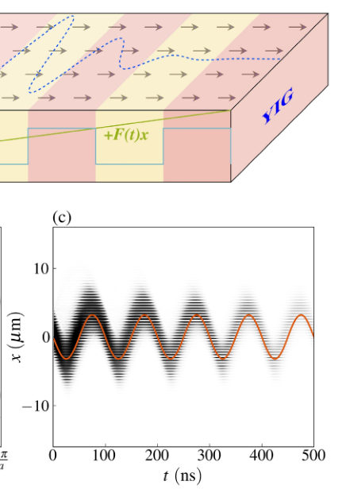
<figcaption class="paper-figure-caption"><b>Fig 1.</b> FIG. 1. (a) Schematic of the magnonic crystal with spatially periodic varying anisotropy</figcaption>
</figure>
<figure class="paper-figure-card">
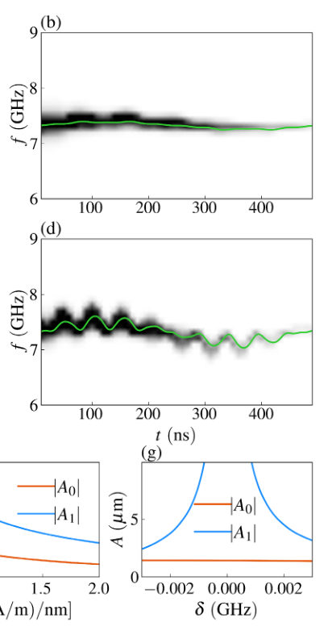
<figcaption class="paper-figure-caption"><b>Fig 2.</b> FIG. 2. Motion trajectories and time-windowed frequency spectra of the magnon packet</figcaption>
</figure>
<figure class="paper-figure-card">
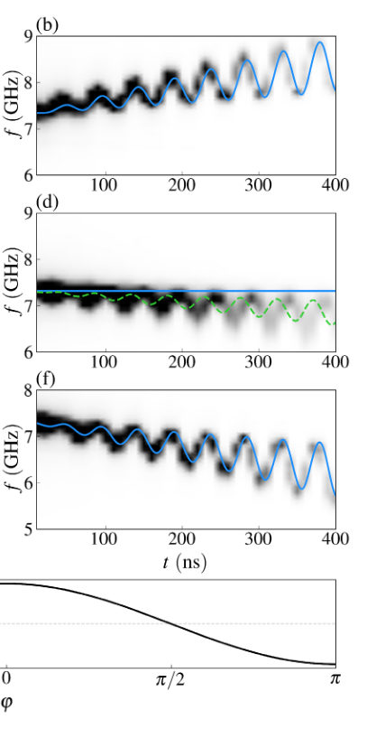
<figcaption class="paper-figure-caption"><b>Fig 3.</b> FIG. 3. Motion trajectories and frequency spectra of the magnon packet for (a-b) ϕ = 0,</figcaption>
</figure>
<figure class="paper-figure-card">
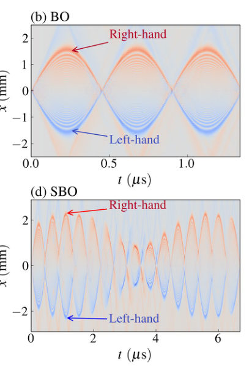
<figcaption class="paper-figure-caption"><b>Fig 4.</b> FIG. 4. (a) Band structure for the AFM magnonic crystal. (b) Magnon BO under the</figcaption>
</figure>
</div>

<p><strong>Summary.</strong> This work predicts and analyzes Super-Bloch Oscillations in magnonic crystals driven by patterned magnetic fields. By applying a near-resonant AC drive, the system can be switched between standard Bloch Oscillation, SBO, and highly directional transport. This establishes magnonics as a versatile platform for reconfigurable wave manipulation in condensed matter devices.</p>
<p><strong>Why it may be interesting.</strong> The concept of SBOs and phase-controlled transport in magnonics provides an analogy to wave packet control in quantum systems, offering a platform for reconfigurable devices analogous to quantum signal routing.</p>
<details>
<summary>Detailed structure</summary>
<p><strong>Main problem.</strong> The study aims to demonstrate and analyze Super-Bloch Oscillations (SBOs) and the resulting switchable transport regimes in magnonic crystals.</p>
<p><strong>Main result.</strong> The system can be switched between conventional Bloch Oscillation (BO), SBO, and highly directional transport by tuning the frequency and phase of an applied AC magnetic gradient field.</p>
<p><strong>Method.</strong> The analysis uses a linearized model derived from the LLG equation, mapping the dynamics onto a Schrödinger equation to derive analytical expressions for oscillation amplitudes and drift velocity.</p>
<p><strong>Model / system.</strong> The physical system is a magnonic crystal (e.g., YIG film) where magnon wave packets propagate under the influence of static and AC gradients of the magnetic anisotropy field.</p>
<p><strong>Key observables.</strong> Oscillation amplitudes ($A_0, A_1$), superperiod ($T_{	ext{super}}$), drift velocity ($v_m$), and time-dependent carrier frequency evolution.</p>
<p><strong>Important parameters / regimes.</strong> The driving fields include static and near-resonant AC gradients; key parameters involve the detuning ($\delta$) and the phase ($\phi$) of the AC drive.</p>
<p><strong>Assumptions / limitations.</strong> The analysis relies on linearizing the magnon dynamics and projecting the motion onto the lowest magnon band.</p>
<p><strong>Figures summary.</strong> Figures illustrate the schematic of the crystal, the dependence of motion/spectra on gradient strengths and detuning, and crucially, how the initial phase ($\phi$) controls the direction of magnon transport.</p>
<p><strong>Paper structure.</strong> The paper progresses by first establishing the BO mechanism with a static gradient, then introducing the AC drive to generate SBOs, and finally analyzing the resonant regime where phase control enables directional transport, extending the concept to AFM crystals.</p>
</details>
<details>
<summary>Abstract</summary>
<p>Super-Bloch oscillations (SBOs) offer a powerful route to control wave packet propagation in driven lattices, yet their realization in magnonic systems has remained elusive. Here, we predict SBOs of magnon wave packets in periodic magnonic crystals driven by static and ac gradients of magnetic anisotropy field. A static gradient alone induces magnon Bloch oscillation (BO) with a constant carrier frequency. Remarkably, adding a near-resonant MHz-scale ac driving gives rise to a slow large-amplitude envelope oscillation, the hallmark of SBO. At exact resonance, the ac driving enables phase-controlled directional transport with a carrier-frequency shift up to GHz scale. Consequently, the same structure can be switched among three distinct regimes: conventional BO, SBO, and directed transport. Analytical expressions for the oscillation amplitudes, superperiod, drift velocity, and frequency evolution are validated by micromagnetic simulations. Extending to antiferromagnet magnonic crystals, we further demonstrate that these effects drive opposite motions of two oppositely polarized magnon modes in THz range. Our work establishes magnon SBOs as a versatile platform, opening a new avenue for reconfigurable magnonic devices.</p>
</details>
<p><sub><a href="#top">↑ back to top</a></sub></p>

<p><a id="paper-2610.36041"></a></p>
<h3 id="phase-transitions-in-mismatched-bayesian-inference-for-the-ising-model"><a href="http://arxiv.org/abs/2610.36041v1">Phase Transitions in Mismatched Bayesian Inference for the Ising Model</a></h3>
<p><strong>Authors:</strong> Xinyu Sun, Zhou-Quan Wan, Shao-Kai Jian, Hong Yao<br>
<strong>Type:</strong> theory · <strong>Category:</strong> disordered systems and neural networks · <strong>PDF:</strong> <a href="https://arxiv.org/pdf/2610.36041v1">https://arxiv.org/pdf/2610.36041v1</a><br>
<strong>Analysis basis:</strong> full PDF text, analyzed in chunks
<strong>Topic relevance:</strong> <code>Keldysh / 2PI / non-Gaussian methods</code> <strong>2/5</strong> · <code>quantum measurements</code> <strong>2/5</strong> · <code>analog quantum simulation</code> <strong>1/5</strong> · <code>driven-dissipative phase transition</code> <strong>1/5</strong> · <code>non-equilibrium universality</code> <strong>1/5</strong></p>
<div class="figure-strip-hint">↔ Scroll figures horizontally</div>
<div class="paper-figures-scroll">
<figure class="paper-figure-card">
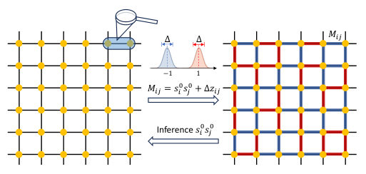
<figcaption class="paper-figure-caption"><b>Fig 1.</b> FIG. 1. A true configuration s0 generates the record Mij = s0 i s0 j + ∆zij. Inference assigns a posterior probability to can- didate configurations conditioned on the same record.</figcaption>
</figure>
<figure class="paper-figure-card">
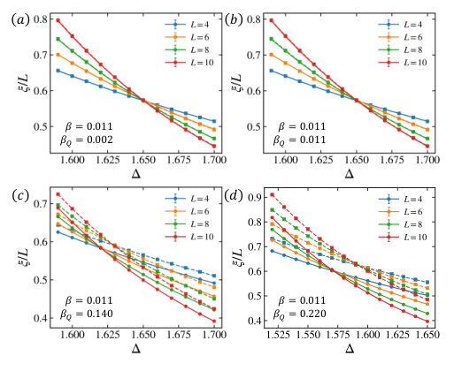
<figcaption class="paper-figure-caption"><b>Fig 2.</b> FIG. 2. Finite-size crossings under temperature mismatch. We fix β = 0.011 and matched noise ∆= ∆Q, and vary ∆ for (a) βQ = 0.002, (b) βQ = 0.011, (c) βQ = 0.14, and (d) βQ = 0.22. Solid curves show ξP /L, associated with FM order (truth–posterior reconstruction), while dashed curves show ξQ/L, associated with SG order (posterior–posterior overlap). Different colors denote L = 4, 6, 8, 10, with N = 35840 disorder realizations for each data point.</figcaption>
</figure>
<figure class="paper-figure-card">
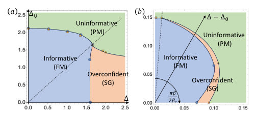
<figcaption class="paper-figure-caption"><b>Fig 3.</b> FIG. 3. Numerical phase diagrams of mismatched Ising in- ference in 3D. (a) Noise mismatch at β = βQ = 0. We fix ∆/∆Q = 0.25, 0.5, 0.7, 1, 1.3 and vary ∆Q to determine the FM and SG transition boundaries. In addition, we fix ∆= 2 and vary ∆Q to locate the SG–PM transition. Blue circles mark transitions detected by FM order, while yellow triangles mark those detected by SG order. The dashed line ∆= ∆Q is the Gaussian Nishimori line. The colored regions denote the informative (FM), overconfident (SG), and uninformative (PM) phases. (b) Temperature mismatch at fixed β = 0.011 and matched noise ∆= ∆Q, for βQ = 0.002, 0.011, 0.14, 0.22. To display the small splitting more clearly, we use...</figcaption>
</figure>
</div>

<p><strong>Summary.</strong> This work analyzes the failure modes of Bayesian inference applied to the Ising model when the assumed model parameters do not match reality. Using replica field theory, the authors characterize an 'overconfident phase' where the inference appears certain but fails to reconstruct the true underlying state. This provides a theoretical understanding of model mismatch in statistical inference applied to physical systems.</p>
<p><strong>Why it may be interesting.</strong> The study provides a powerful theoretical framework for understanding how imperfect knowledge (mismatch) in physical modeling can lead to spurious, overconfident conclusions, which has parallels in complex systems modeling.</p>
<details>
<summary>Detailed structure</summary>
<p><strong>Main problem.</strong> The paper investigates the 'overconfident phase' that can occur in Bayesian inference when the assumed model parameters mismatch the true physical parameters of an Ising model.</p>
<p><strong>Main result.</strong> The overconfident phase is analytically shown to occur when inference underestimates measurement noise or assumes an incorrect prior temperature, mapping the problem to a spin-glass like regime.</p>
<p><strong>Method.</strong> The analysis employs replica field theory and maps the inference problem exactly onto a correlated random-bond Ising model.</p>
<p><strong>Model / system.</strong> The system is an Ising model on a lattice subjected to noisy bond measurements, analyzed through the lens of Bayesian inference using assumed parameters ($eta_Q, \Delta_Q$) versus true parameters ($eta, \Delta$).</p>
<p><strong>Key observables.</strong> Truth–Posterior Reconstruction ($q_P$) and Posterior–Posterior Agreement ($q_Q$) are key diagnostics used to define the informative, uninformative, and overconfident phases.</p>
<p><strong>Important parameters / regimes.</strong> The mismatch parameters include the true inverse temperature $eta$, measurement noise $\Delta$, and the assumed parameters $eta_Q$ and $\Delta_Q$.</p>
<p><strong>Assumptions / limitations.</strong> The analysis relies on replica field theory and approximations near the upper critical dimension $d_c = 6$.</p>
<p><strong>Figures summary.</strong> Figure 1 illustrates the general process of inference from true states to noisy measurements and subsequent posterior assignment.</p>
<p><strong>Paper structure.</strong> The paper progresses by defining the mismatch problem, using replica field theory to derive an effective Hamiltonian, mapping this to a random-bond Ising model, and finally analyzing the resulting phase diagram and parameter recovery methods.</p>
</details>
<details>
<summary>Abstract</summary>
<p>Bayesian inference with a mismatched model can develop an overconfident phase, characterized by posterior agreement without faithful reconstruction of the true state. We study Bayesian inference from noisy bond measurements of an Ising model in its paramagnetic phase, with true inverse temperature $β$ and measurement-noise strength $Δ$, while inference assumes corresponding parameters $β_Q$ and $Δ_Q$. Using replica field theory, we analytically show that the overconfidence phase can occur when inference underestimates the measurement noise ($Δ_Q < Δ$) or assumes a lower prior temperature than the true one ($β_Q > β$). An exact change of variables maps the problem to a correlated random-bond Ising model, where the informative, uninformative, and overconfident phases correspond to ferromagnetic, paramagnetic, and spin-glass phases, respectively. We further perform Monte Carlo simulations of the mapped model in three dimensions and establish a finite overconfident region between the informative and uninformative phases, consistent with our analytical prediction. Finally, we show that the true model parameters can be inferred directly from the measurement records, providing a natural route to calibrating the inference model.</p>
</details>
<p><sub><a href="#top">↑ back to top</a></sub></p>

<p><a id="paper-2610.36997"></a></p>
<h3 id="the-disordered-universe-2025-statistical-systems-out-of-equilibrium"><a href="http://arxiv.org/abs/2610.36997v1">The Disordered Universe 2025: Statistical Systems Out of Equilibrium</a></h3>
<p><strong>Authors:</strong> Weam Abou Hamdan, Martí Berenguer Mimó, Rafael Carrasco Carmona, Silvia Pla, Omkar Shetye, Tarek Anous, Paolo Benincasa, Guilherme Leite Pimentel<br>
<strong>Type:</strong> theory · <strong>Category:</strong> disordered systems and neural networks · <strong>PDF:</strong> <a href="https://arxiv.org/pdf/2610.36997v1">https://arxiv.org/pdf/2610.36997v1</a><br>
<strong>Analysis basis:</strong> full PDF text, analyzed in chunks
<strong>Topic relevance:</strong> <code>Keldysh / 2PI / non-Gaussian methods</code> <strong>2/5</strong> · <code>analog quantum simulation</code> <strong>1/5</strong> · <code>driven-dissipative phase transition</code> <strong>1/5</strong> · <code>non-equilibrium universality</code> <strong>1/5</strong> · <code>scars &amp; prethermalization</code> <strong>1/5</strong></p>
<div class="figure-strip-hint">↔ Scroll figures horizontally</div>
<div class="paper-figures-scroll">
<figure class="paper-figure-card">

<figcaption class="paper-figure-caption"><b>Fig 1.</b> Figure 2: Free energy as a function of m for three different values of the temperature.</figcaption>
</figure>
<figure class="paper-figure-card">
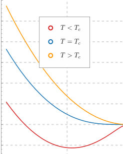
<figcaption class="paper-figure-caption"><b>Fig 2.</b> Fig. 2 shows the free energy as a function of m for several values of the temperature. As the temper-</figcaption>
</figure>
<figure class="paper-figure-card">
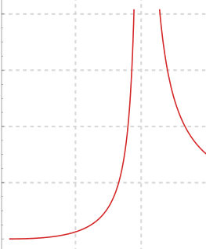
<figcaption class="paper-figure-caption"><b>Fig 3.</b> Figure 3: Susceptibility χ as a function of the temperature T.</figcaption>
</figure>
<figure class="paper-figure-card">
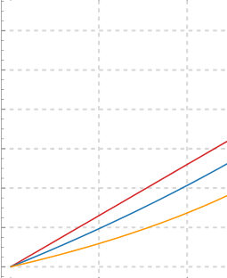
<figcaption class="paper-figure-caption"><b>Fig 4.</b> Figure 4: Shear viscosity η as a function of the temperature. Super-exponential increase in viscosity</figcaption>
</figure>
<figure class="paper-figure-card">
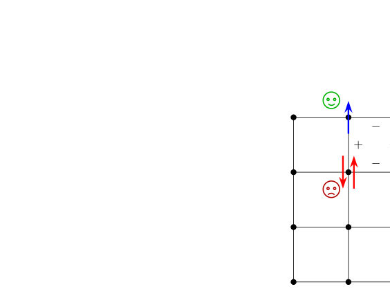
<figcaption class="paper-figure-caption"><b>Fig 5.</b> Figure 5: Frustrated Ising lattice. We show an example of four spins in which three interaction terms</figcaption>
</figure>
</div>

<p><strong>Summary.</strong> This work provides a comprehensive theoretical analysis of quantum spin glasses using the spherical p-spin model. It develops techniques like the replica method and RSB to characterize the glassy phase transition. The findings are crucial as they establish spin glass models as powerful theoretical laboratories for understanding disorder in complex physical regimes, including cosmology and holography.</p>
<p><strong>Why it may be interesting.</strong> The rigorous mathematical tools developed for spin glasses (RSB, free energy landscapes) provide powerful, transferable frameworks for understanding complex, out-of-equilibrium dynamics in quantum many-body systems.</p>
<details>
<summary>Detailed structure</summary>
<p><strong>Main problem.</strong> The paper addresses the theoretical characterization of the glass transition in disordered systems, extending concepts from spin glasses to cosmology and holography.</p>
<p><strong>Main result.</strong> It derives the thermodynamic and dynamic properties of the spherical p-spin model, showing a clear transition from a high-temperature paramagnetic phase to a low-temperature glassy phase characterized by spontaneous magnetization.</p>
<p><strong>Method.</strong> The analysis heavily relies on the replica method and replica symmetry breaking (RSB) techniques, combined with mean-field approximations and saddle-point evaluations in the large-N limit.</p>
<p><strong>Model / system.</strong> The primary model is the spherical p-spin glass, which captures frustration and quenched disorder. The framework is then applied conceptually to cosmological and holographic systems related to black hole fragmentation.</p>
<p><strong>Key observables.</strong> Free energy per site, magnetization ($\langle m 
angle$), susceptibility ($\chi$), and real-time correlation functions.</p>
<p><strong>Important parameters / regimes.</strong> Inverse temperature ($eta$), coupling constant ($J$), and the dimensionality parameter $p$ of the spin interaction.</p>
<p><strong>Assumptions / limitations.</strong> The calculations are performed in the mean-field approximation and rely on the large-N limit and saddle-point approximations.</p>
<p><strong>Figures summary.</strong> Figures illustrate the free energy landscape changing from a single minimum to two symmetric minima upon cooling, and show the divergence of susceptibility at the critical temperature.</p>
<p><strong>Paper structure.</strong> The structure moves from classical spin glass analysis (mean-field, replica method) to the quantum extension, detailing the calculation of thermodynamic quantities and finally connecting the mathematical formalism to physical concepts in cosmology and holography.</p>
</details>
<details>
<summary>Abstract</summary>
<p>These lecture notes provide an introduction to quantum spin glasses, with a particular emphasis on their application to open problems in cosmology and holography. Focusing on the spherical $p$-spin model, we develop a complete and self-contained analysis of its thermodynamic and dynamical properties. We introduce the replica method, discuss both replica-symmetric and one-step replica symmetry-broken solutions, and characterise the resulting glassy phase. The framework is then extended to the quantum model, where we study the emergence of slow dynamics and the role of quantum correlations through Euclidean and real-time correlation functions. Finally, we explore how concepts such as replica symmetry breaking and disorder naturally arise in cosmological and holographic systems related to black hole fragmentation, highlighting spin glass models as useful theoretical laboratories for these phenomena. These notes are based on a series of lectures held during the La Ricotta Summer School: The Disordered Universe 2025 from 21 July to 1 August 2025.</p>
</details>
<p><sub><a href="#top">↑ back to top</a></sub></p>

<p><a id="paper-2610.36214"></a></p>
<h3 id="a-cascade-of-orbital-field-driven-phases-with-a-lifshitz-type-transition-to-unidirectional-spiral-order"><a href="http://arxiv.org/abs/2610.36214v1">A cascade of orbital-field-driven phases with a Lifshitz-type transition to unidirectional spiral order</a></h3>
<p><strong>Authors:</strong> Hiroki Nakai, Hae-Young Kee<br>
<strong>Type:</strong> theory · <strong>Category:</strong> strongly correlated electrons · <strong>PDF:</strong> <a href="https://arxiv.org/pdf/2610.36214v1">https://arxiv.org/pdf/2610.36214v1</a><br>
<strong>Analysis basis:</strong> full PDF text, analyzed in chunks
<strong>Topic relevance:</strong> <code>Keldysh / 2PI / non-Gaussian methods</code> <strong>2/5</strong> · <code>analog quantum simulation</code> <strong>2/5</strong> · <code>Frenkel-Kontorova</code> <strong>1/5</strong></p>
<div class="figure-strip-hint">↔ Scroll figures horizontally</div>
<div class="paper-figures-scroll">
<figure class="paper-figure-card">
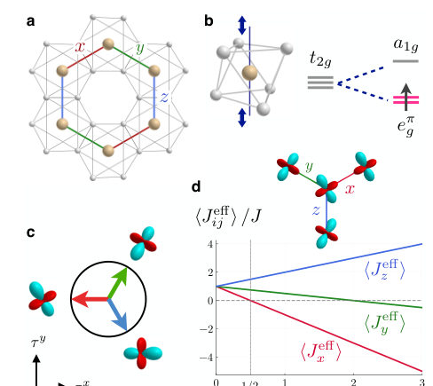
<figcaption class="paper-figure-caption"><b>Fig 1.</b> FIG. 1. Spin-orbital model on the honeycomb lattice. a Honeycomb lattice with the three nearest-neighbor bonds γ = x, y, z. b Trigonal crystal-field splitting of the t2g orbitals into a lower eπ g doublet and an upper a1g singlet, with one electron occupying the eπ g doublet in the d1 configuration. c Orbital pseudospins in the τ x-τ y plane and the corresponding real orbital wave functions. The red, green, and blue arrows represent the three orbital pseudospin states satisfying ⟨˜τ γ⟩= −1/2 for γ = x, y, z, respectively. d Orbital dependence of the effective spin exchange ⟨Jeff ij ⟩for a representative orbital configuration shown schematically.</figcaption>
</figure>
<figure class="paper-figure-card">
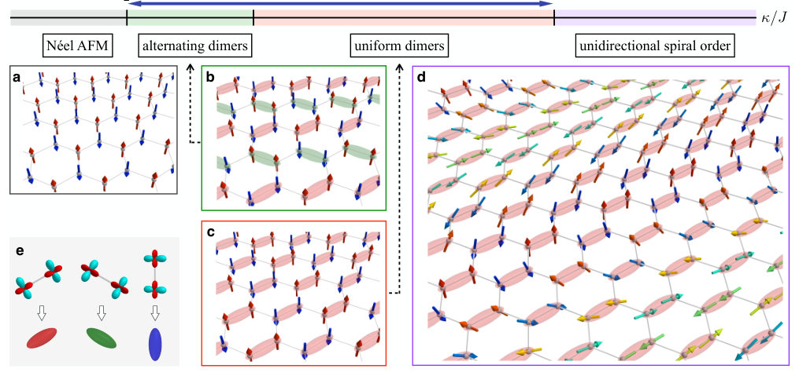
<figcaption class="paper-figure-caption"><b>Fig 2.</b> FIG. 2. A cascade of orbital-field-driven phases. Semiclassical phase diagram as a function of κ/J, obtained from site-product variational calculations and LFW theory. a-d Schematic spin-orbital configurations of the Néel AFM (a), alternating- dimer (b), uniform-dimer (c), and unidirectional spiral (d) phases. Arrows denote spins, and colored ovals indicate orbital configurations associated with FM spin pairs. In the Néel phase, no dimers are present, and the orbital degrees of freedom remain unconstrained, corresponding to a para-orbital liquid. e Correspondence between orbital configurations and colored ovals, with red, green, and blue representing x-, y-, and z-bonds, respectively. Each...</figcaption>
</figure>
<figure class="paper-figure-card">
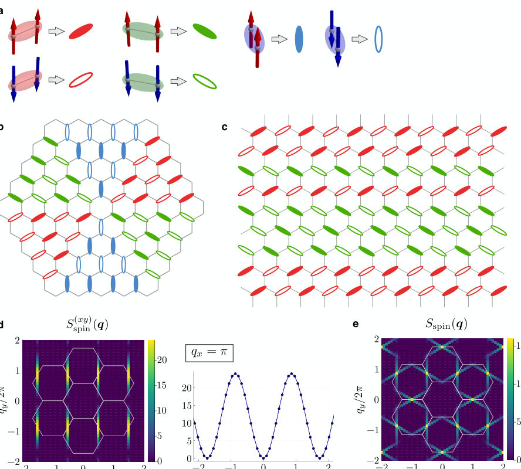
<figcaption class="paper-figure-caption"><b>Fig 3.</b> FIG. 3. Dimer configurations with subextensive degeneracy. a Mapping of the spin-orbital configurations onto a dimer representation. FM spin pairs, indicated by spin arrows and colored ovals, are mapped onto filled and open dimers for up-up and down-down spin pairs, respectively. The oval colors and corresponding orbitals follow the convention in Fig. 2e. b Dimer configuration with nd = 0 on a hexagonal plaquette. c Representative ground state consisting of parallel xy-chains with x- or y-bond dimers. d Spin structure factor S(xy) spin (q) for the xy-chain ground-state manifold at L = 12, with a line cut at qx = π (right). e Spin structure factor Sspin(q) averaged over the full ground-state...</figcaption>
</figure>
<figure class="paper-figure-card">
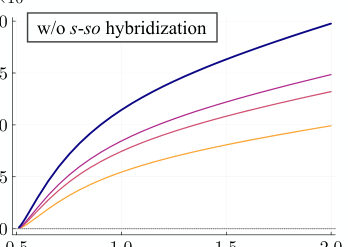
<figcaption class="paper-figure-caption"><b>Fig 4.</b> FIG. 4. Quantum selection of dimer configurations. Pe- riodic dimer configurations are denoted by RmGmRmGm · · · , where R and G represent zigzag chains with dimers occupying the x- and y-bonds, respectively, and m denotes the number of consecutive chains with the same dimer pattern. a Alternating (m = 1) and uniform (m →∞) dimer configurations. b Rela- tive zero-point energy per site, [EZP(m) −EZP(m = 1)]/NJ, for m = 2, 3, 4, and m →∞, as a function of κ/J, including the hybridization term between the spin (s) and spin-orbital (so) modes. c Same as b, with the hybridization term switched off.</figcaption>
</figure>
<figure class="paper-figure-card">
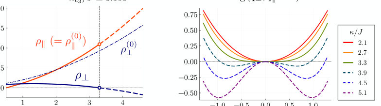
<figcaption class="paper-figure-caption"><b>Fig 5.</b> FIG. 5. Goldstone-mode instability induced by spin-orbital fluctuations. a LFW spectra of the uniform-dimer configuration at κ/J = 1.5 and 3.3, with the spin and spin-orbital weights indicated in blue and red, respectively. The orbital mode is omitted for clarity. b Spin stiffnesses ρ∥and ρ⊥, defined for momenta parallel and perpendicular to the dimers, respectively. The corresponding stiffnesses ρ(0) ∥ and ρ(0) ⊥, obtained with the hybridization between the spin and spin-orbital modes switched off, are shown for comparison. c Evolution of ω2 G along the Γ-K direction across κc3. In b and c, dashed lines indicate formal continuations into the unstable regime κ &gt; κc3.</figcaption>
</figure>
</div>

<p><strong>Summary.</strong> This work explores magnetic frustration in a honeycomb lattice model driven by an orbital-field interaction. The system exhibits a sequence of magnetic phases as the field strength increases, culminating in a transition to an incommensurate spiral state. This transition is characterized by a Lifshitz instability, providing a microscopic route to understanding complex magnetic ordering in correlated materials.</p>
<p><strong>Why it may be interesting.</strong> The mechanism of orbital-field coupling driving a Lifshitz transition is highly relevant to understanding exotic magnetic ordering in transition metal oxides, a key area in strongly correlated electron physics.</p>
<details>
<summary>Detailed structure</summary>
<p><strong>Main problem.</strong> The paper investigates a novel frustration mechanism arising from an intrinsic bond-dependent orbital-field coupling to spin correlations, leading to a cascade of magnetic phases and a Lifshitz-type transition.</p>
<p><strong>Main result.</strong> The system undergoes a transition from a para-orbital liquid through collinear magnet phases to an incommensurate unidirectional spiral order, signaled by a Lifshitz instability where the spin stiffness vanishes along one direction.</p>
<p><strong>Method.</strong> The study employs variational methods on the Heisenberg model supplemented by an orbital-field interaction, analyzing quantum fluctuations via Linear Flavor-Wave theory to determine the true ground state.</p>
<p><strong>Model / system.</strong> The model is an antiferromagnetic Heisenberg model on the honeycomb lattice, incorporating orbital degrees of freedom ($    au$) via an orbital-field Hamiltonian ($\mathcal{H}_{  ext{orb}}$). The interactions are parameterized by the ratio $\kappa/J$.</p>
<p><strong>Key observables.</strong> Spin correlations, spin stiffness ($
ho_{\perp}$), spiral wavevector ($\mathbf{Q}_0$), and the relative zero-point energy of different dimer coverings.</p>
<p><strong>Important parameters / regimes.</strong> The ratio $\kappa/J$ controls the phase transitions; critical points include $\kappa/J = 1/2$ and $\kappa_{c3}/J \simeq 3.303$.</p>
<p><strong>Assumptions / limitations.</strong> The analysis relies on mapping the system to effective low-energy Hamiltonians describing Goldstone modes coupled to gapped spin-orbital fluctuations.</p>
<p><strong>Figures summary.</strong> Figures illustrate the lattice structure and orbital pseudospins, the semiclassical phase diagram showing the cascade of phases, and the LFW spectra demonstrating the softening and Lifshitz-type instability at the critical point.</p>
<p><strong>Paper structure.</strong> The paper progresses from defining the orbital-field frustrated model on the honeycomb lattice, analyzing the resulting subextensive degeneracy of collinear states, and finally detailing the quantum selection mechanism leading to the incommensurate spiral phase via a Lifshitz instability.</p>
</details>
<details>
<summary>Abstract</summary>
<p>Frustration in magnetic systems gives rise to unconventional orders and exotic spin liquids. Here, we explore a new type of frustration arising from an intrinsic bond-dependent orbital-field that couples orbital degrees of freedom to spin correlations. Introducing this orbital-field interaction into the antiferromagnetic Heisenberg model on the honeycomb lattice, we show that local spin-orbital constraints generate a subextensive degeneracy, lifted by order-by-disorder to select distinct collinear magnets in a cascade of phases as the orbital field increases from a para-orbital liquid. At larger fields, the selected phase gives way to an incommensurate unidirectional spiral that spontaneously breaks chiral symmetry. This transition is driven by the coupling of a Goldstone mode to gapped dynamical spin-orbital fluctuations. The spin stiffness becomes negative along a particular direction, while the spiral wavevector grows as the square root of the distance from the transition, signaling a Lifshitz-type transition. We present a microscopic route to realizing this orbital field and discuss candidate materials.</p>
</details>
<p><sub><a href="#top">↑ back to top</a></sub></p>

<p><a id="paper-2610.36963"></a></p>
<h3 id="correlation-sensitive-magic-state-distillation-from-spin-squeezed-neutral-atoms"><a href="http://arxiv.org/abs/2610.36963v1">Correlation-sensitive magic-state distillation from spin-squeezed neutral atoms</a></h3>
<p><strong>Authors:</strong> Ximo Wang, Ruyue Guo, Xinbo Li, Min Feng, Haozhe Wang, Zhenqi Bai, Yichi Zhang<br>
<strong>Type:</strong> theory · <strong>Category:</strong> quantum information and computing · <strong>PDF:</strong> <a href="https://arxiv.org/pdf/2610.36963v1">https://arxiv.org/pdf/2610.36963v1</a><br>
<strong>Analysis basis:</strong> full PDF text, analyzed in chunks
<strong>Topic relevance:</strong> <code>Rydberg arrays</code> <strong>2/5</strong> · <code>analog quantum simulation</code> <strong>2/5</strong></p>
<div class="figure-strip-hint">↔ Scroll figures horizontally</div>
<div class="paper-figures-scroll">
<figure class="paper-figure-card">
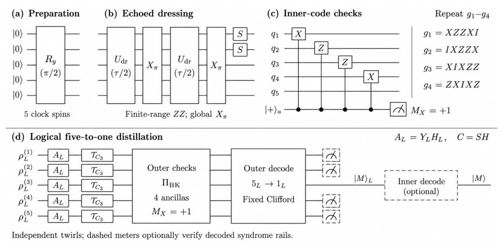
<figcaption class="paper-figure-caption"><b>Fig 1.</b> FIG. 1. Preparation and five-to-one magic-state distillation. (a) A collective Ry(π/2) pulse prepares five clock-state atoms, initially in |0⟩⊗5, in |+⟩⊗5. (b) Two half-duration dressing intervals and two global Xπ pulses generate finite-range Ising interactions while refocusing static single-particle Z shifts. Addressed S gates are then applied to sites 1 and 2. (c) Ancilla- assisted extraction of an inner-code stabilizer, illustrated for g1 = XZZXI. An ancilla initialized in |+⟩controls the indicated Pauli factors and is measured in the X basis. Repeating the check for g1, . . . , g4 and retaining all four +1 outcomes projects the atoms into the [[5, 1, 3]] code space. (d) Five accepted...</figcaption>
</figure>
<figure class="paper-figure-card">
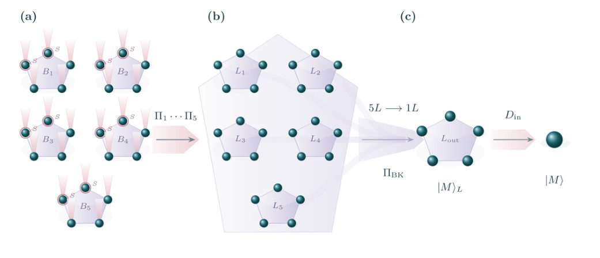
<figcaption class="paper-figure-caption"><b>Fig 2.</b> FIG. 2. Encoding hierarchy. (a) Five blocks Bb, each containing five physical atoms, receive Ising evolution and two addressed S gates. (b) Joint inner acceptance Π1 · · · Π5 produces five encoded inputs Lb. (c) Alignment, independent twirls, outer BK projection, decoding, and the fixed Clifford correction produce one encoded resource; optional inner decoding Din returns a physical qubit. Pentagon sheets indicate code membership, and state symbols indicate the target direction. The simulated positions form a one-dimensional chain. Single-shot joint acceptance is ptot = p(5) in pBK, with the inner probability evaluated on the joint source.</figcaption>
</figure>
<figure class="paper-figure-card">
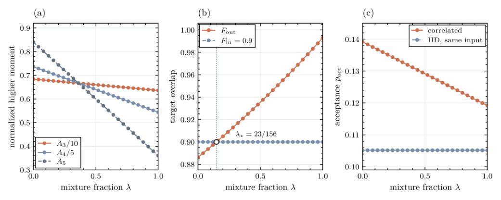
<figcaption class="paper-figure-caption"><b>Fig 3.</b> FIG. 3. Changing distillation gain at fixed local and pair data. The exchangeable family in Eq. (S5) has fixed single-qubit and two-qubit reduced states. (a) Correlation sums normalized as Ak/5 k  . (b) Accepted target fidelity, crossing the common input as the higher moments vary. (c) Success probability, compared with independent and identically distributed (IID) inputs of the same fidelity. Every mixture is evaluated by direct projection of all target-axis sign patterns.</figcaption>
</figure>
<figure class="paper-figure-card">
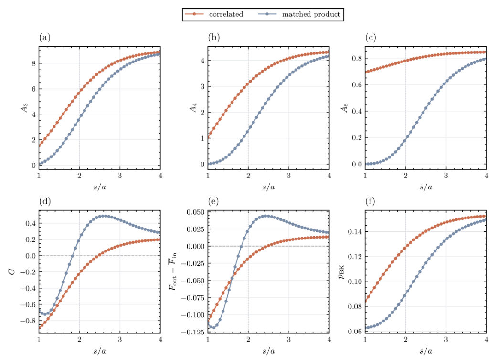
<figcaption class="paper-figure-caption"><b>Fig 4.</b> FIG. 4. Higher moments and distillation gain in the 25-atom source. The source has (θ, ϕ, R/a) = (0.4, 0.3, 4), with positions xb,j/a = b(5 + s/a) + j. Red denotes the jointly accepted source after HL alignment and independent twirls; blue denotes the product of its own five reduced states at each spacing. Panels (a)–(c) show A3, A4, A5; (d) shows G = A3 −2A5 −¯t(3 + A4); (e) shows fidelity gain relative to the mean input; and (f) shows outer success probability. Vertical guides mark the reference spacing near the local-threshold boundary; horizontal zero lines mark the purification boundary. The interior phase slice has a larger local-fidelity margin. Lines join complete code-support...</figcaption>
</figure>
<figure class="paper-figure-card">
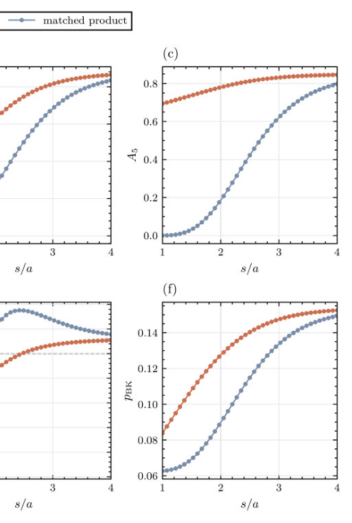
<figcaption class="paper-figure-caption"><b>Fig 5.</b> Figure 7 shows how this bound and the ideal true-branch atom cost respond to report confusion and loss. With independent survival κ = (1 −ℓ)5, the ideal reference cost is</figcaption>
</figure>
</div>

<p><strong>Summary.</strong> This paper introduces a correlation-sensitive diagnostic for magic-state distillation in spin-squeezed neutral atoms. It shows that higher-order correlations, not just single- or two-qubit measurements, are necessary to accurately predict the distillation gain. This provides a crucial theoretical link between the correlation structure of the physical resource state and its ultimate utility in quantum computation.</p>
<p><strong>Why it may be interesting.</strong> This work directly bridges the gap between the fundamental quantum resource theory (magic-state distillation) and the physical implementation constraints of neutral atom arrays, providing a quantitative diagnostic tool based on higher-order correlations.</p>
<details>
<summary>Detailed structure</summary>
<p><strong>Main problem.</strong> The research addresses developing a correlation-sensitive method for magic-state distillation, aiming to predict distillation gain even when input states exceed the threshold for independent states.</p>
<p><strong>Main result.</strong> Interblock correlations can reverse magic-state distillation, and higher-order moments provide a necessary diagnostic to predict distillation gain, which is otherwise obscured by identical low-order reduced states.</p>
<p><strong>Method.</strong> The authors derive the correlated-input Bravyi–Kitaev map and use higher-order Pauli string expectation values (third- and fifth-order correlations) to determine the sign of the distillation gain.</p>
<p><strong>Model / system.</strong> The process is modeled using five-to-one magic-state distillation protocols applied to spin-squeezed neutral atoms, utilizing finite-range Ising dynamics for resource preparation.</p>
<p><strong>Key observables.</strong> Distillation Gain ($G$), Acceptance Probability ($ ext{pacc}$), Output Polarization (determined by third- and fifth-order correlations), and various higher-order Pauli string moments ($A_k$).</p>
<p><strong>Important parameters / regimes.</strong> Block separation ($s$), circuit error rates, storage dephasing rates, and the source-contrast threshold.</p>
<p><strong>Assumptions / limitations.</strong> The analysis assumes a circuit model incorporating readout errors, loss, and storage histories, and that the gain is determined by higher-order correlations.</p>
<p><strong>Figures summary.</strong> Figures illustrate the five-to-one distillation process, the encoding hierarchy, and the dependence of distillation gain ($G$) on higher-order moments and the physical separation ($s$) between atomic blocks.</p>
<p><strong>Paper structure.</strong> The paper builds from the theoretical framework of correlated distillation protocols, details the physical implementation using spin-squeezed atoms and Ising dynamics, derives the necessary moment-based diagnostics, and concludes by linking these statistical measures to physical parameters like block separation and error rates.</p>
</details>
<details>
<summary>Abstract</summary>
<p>We show that interblock correlations can reverse magic-state distillation even when every input exceeds the threshold for independent states. For the five-to-one Bravyi-Kitaev protocol with independent local Clifford twirls, we express the output in terms of measurable target-axis moments. Fourth-order correlations determine acceptance, while third- and fifth-order correlations determine the output polarization. This relation yields a direct sign test for distillation gain and opposite gains for inputs with identical single-qubit and two-qubit reduced states. We connect this mechanism to neutral-atom resource preparation through finite-range Ising dynamics. Block separation suppresses detrimental interblock coupling, and locally addressed Clifford phases release interaction-generated magic from a spin-squeezed precursor by changing the symmetry selected by code projection. A protocol that retains accepted source outputs achieves positive gain above a source-contrast threshold set by circuit errors and storage dephasing. The same moments specify a finite-sample experimental diagnostic. These results connect the correlation structure of a resource state to its preparation, acceptance, and distillation gain.</p>
</details>
<p><sub><a href="#top">↑ back to top</a></sub></p>

<p><a id="paper-2610.36754"></a></p>
<h3 id="a-unified-protocol-for-arbitrary-z-rotations-of-a-class-of-bosonic-cqed-qubits"><a href="http://arxiv.org/abs/2610.36754v1">A Unified Protocol for Arbitrary Z Rotations of a Class of Bosonic cQED Qubits</a></h3>
<p><strong>Authors:</strong> Vahid Shaghaghi<br>
<strong>Type:</strong> theory · <strong>Category:</strong> other · <strong>PDF:</strong> <a href="https://arxiv.org/pdf/2610.36754v1">https://arxiv.org/pdf/2610.36754v1</a><br>
<strong>Analysis basis:</strong> full PDF text, analyzed in chunks
<strong>Topic relevance:</strong> <code>QC/QI experiment</code> <strong>2/5</strong> · <code>Tavis-Cummings &amp; cavity-many-emitter</code> <strong>1/5</strong></p>
<div class="figure-strip-hint">↔ Scroll figures horizontally</div>
<div class="paper-figures-scroll">
<figure class="paper-figure-card">
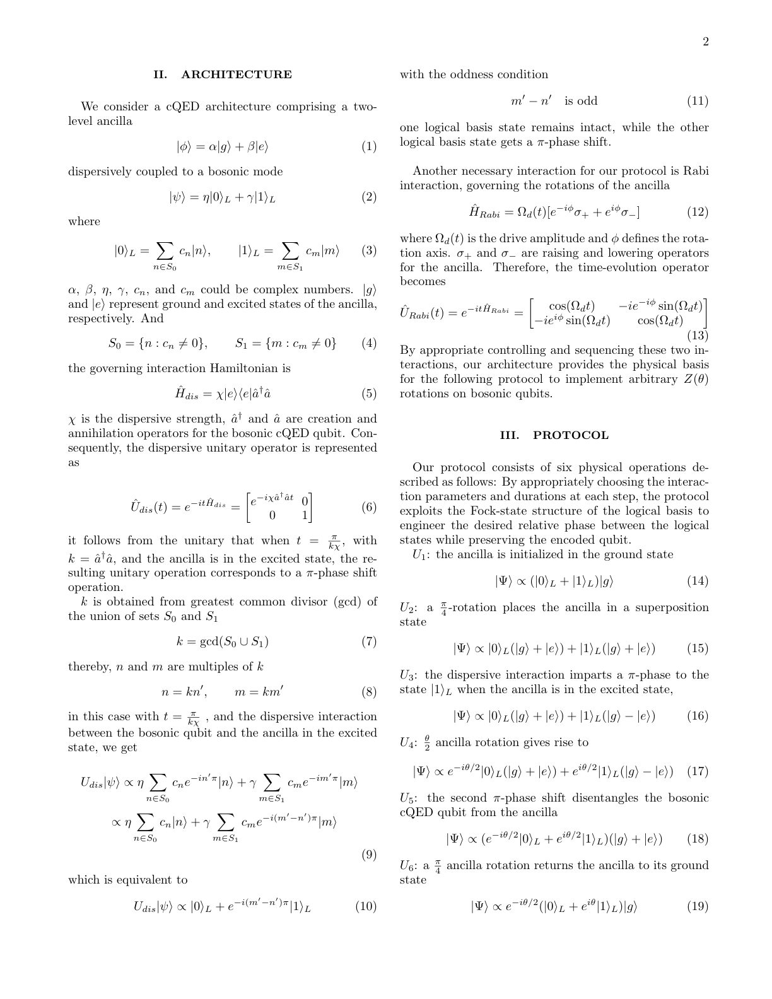
<figcaption class="paper-figure-caption"><b>Fig 1.</b> Low-resolution page preview, page 2</figcaption>
</figure>
<figure class="paper-figure-card">
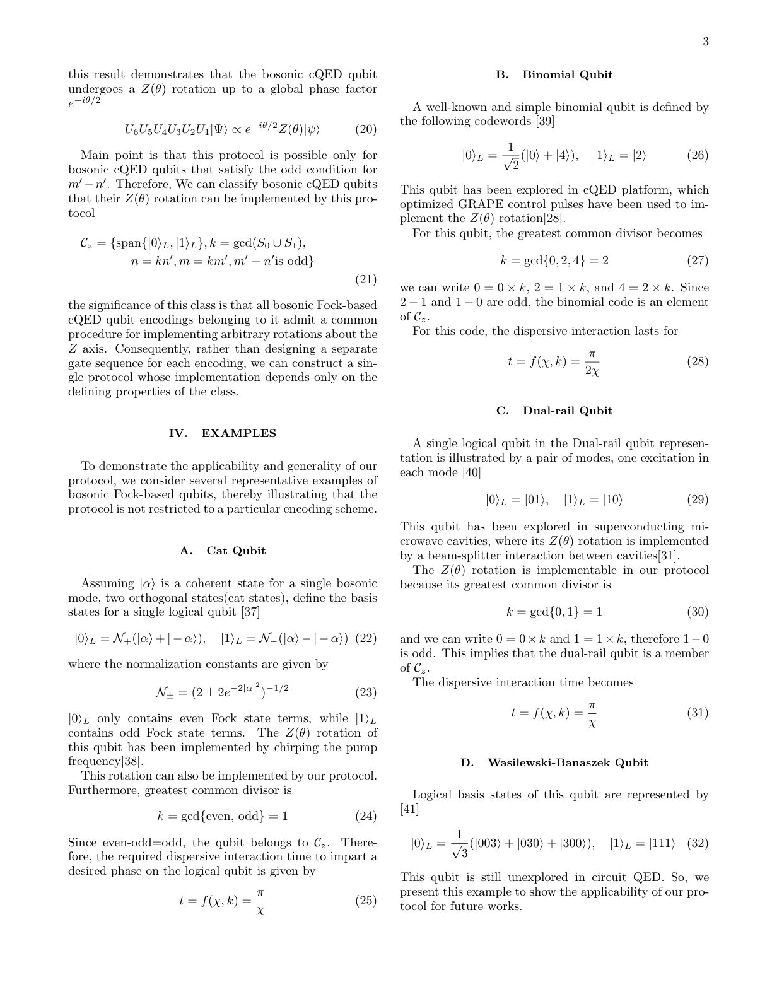
<figcaption class="paper-figure-caption"><b>Fig 2.</b> Low-resolution page preview, page 3</figcaption>
</figure>
<figure class="paper-figure-card">
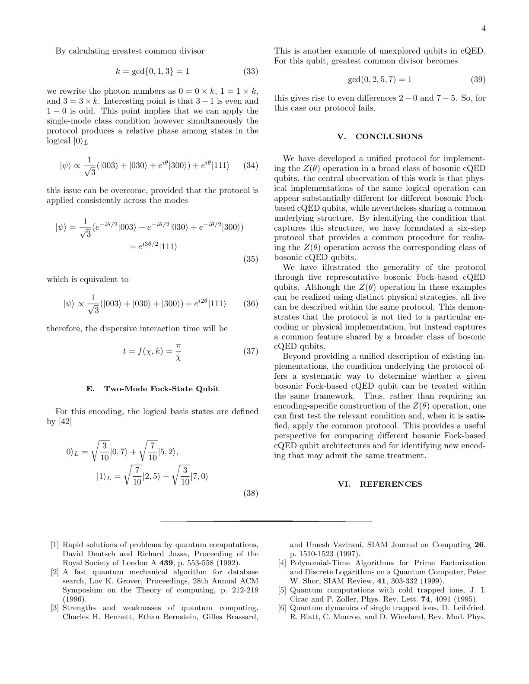
<figcaption class="paper-figure-caption"><b>Fig 3.</b> Low-resolution page preview, page 4</figcaption>
</figure>
<figure class="paper-figure-card">
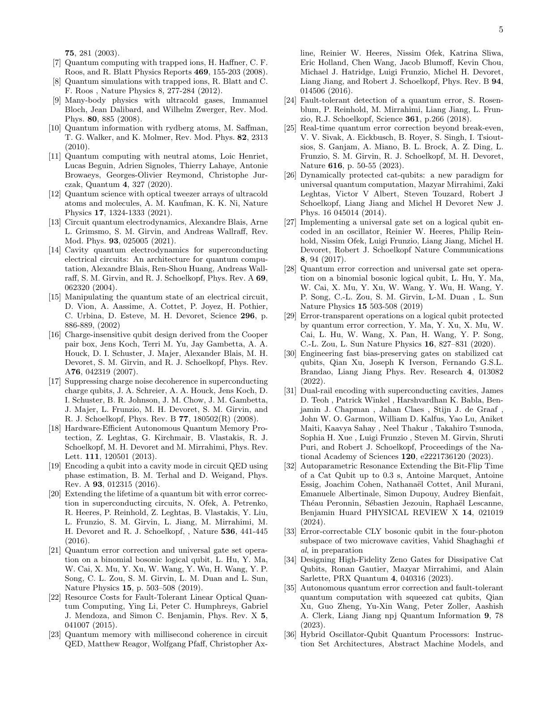
<figcaption class="paper-figure-caption"><b>Fig 4.</b> Low-resolution page preview, page 5</figcaption>
</figure>
<figure class="paper-figure-card">
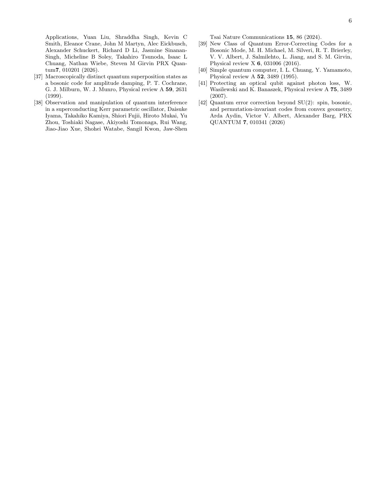
<figcaption class="paper-figure-caption"><b>Fig 5.</b> Low-resolution page preview, page 6</figcaption>
</figure>
</div>

<p><strong>Summary.</strong> This paper introduces a unified, six-step protocol for performing arbitrary Z rotations on a broad class of bosonic cQED qubits. The protocol's applicability is determined by a specific mathematical condition related to the qubit's encoding structure. It is significant because it provides a systematic tool to analyze and control quantum gates across various physical implementations in circuit QED.</p>
<p><strong>Why it may be interesting.</strong> This work provides a general theoretical framework for controlling quantum gates in superconducting circuits, unifying disparate physical implementations under a single mathematical protocol.</p>
<details>
<summary>Detailed structure</summary>
<p><strong>Main problem.</strong> To develop a unified, systematic protocol for implementing arbitrary Z rotations on a diverse class of bosonic cQED qubits.</p>
<p><strong>Main result.</strong> A six-step protocol is formulated that successfully implements the Z(theta) rotation for any bosonic Fock-based cQED qubit satisfying a specific mathematical condition derived from the encoding.</p>
<p><strong>Method.</strong> The protocol is derived by analyzing the required sequence of dispersive and Rabi interactions necessary to engineer the relative phase between logical states.</p>
<p><strong>Model / system.</strong> The system involves bosonic cQED qubits, modeled using a dispersive Hamiltonian ($\hat{H}_{dis}$) and a Rabi Hamiltonian ($\hat{H}_{Rabi}$), realized in circuit QED architectures.</p>
<p><strong>Key observables.</strong> The successful implementation of the Z(theta) rotation operator, and the mathematical condition governing the applicability of the protocol.</p>
<p><strong>Important parameters / regimes.</strong> The coupling strength ($\chi$), the Rabi frequency ($\Omega_d(t)$), and the specific structure of the qubit encoding defined by GCDs of photon numbers.</p>
<p><strong>Assumptions / limitations.</strong> The protocol is only guaranteed to work for qubits satisfying the condition that the difference between certain photon number indices ($m' - n'$) is odd.</p>
<p><strong>Paper structure.</strong> The paper first identifies the general problem of implementing Z rotations across different bosonic qubit encodings. It then derives the six-step protocol based on Hamiltonian engineering. Finally, it rigorously tests the protocol's applicability by analyzing various known qubit types (Cat, Binomial, Dual-rail) against the necessary mathematical condition.</p>
</details>
<details>
<summary>Abstract</summary>
<p>Bosonic-qubit encodings provide diverse approaches to storing and processing quantum information, with logical operations often implemented through encoding-specific physical strategies. Here, we identify a class of bosonic Fock-based qubits in circuit QED for which distinct implementations of arbitrary Z rotations share a common structure. We formulate this structure as a six-step protocol that provides a unified procedure for implementing arbitrary Z rotations across this class of bosonic cQED qubits. The applicability of the protocol is determined by a specific condition on the encoding, providing a criterion for identifying bosonic Fock-based cQED qubits that admit the common implementation.</p>
</details>
<p><sub><a href="#top">↑ back to top</a></sub></p>

<p><a id="paper-2610.36031"></a></p>
<h3 id="analytic-bootstrap-solution-for-quantum-mechanics-on-a-circle"><a href="http://arxiv.org/abs/2610.36031v1">Analytic Bootstrap Solution for Quantum Mechanics on a Circle</a></h3>
<p><strong>Authors:</strong> David Berenstein, Upamanyu Moitra<br>
<strong>Type:</strong> theory · <strong>Category:</strong> other · <strong>PDF:</strong> <a href="https://arxiv.org/pdf/2610.36031v1">https://arxiv.org/pdf/2610.36031v1</a><br>
<strong>Analysis basis:</strong> full PDF text, analyzed in chunks
<strong>Topic relevance:</strong> <code>Frenkel-Kontorova</code> <strong>2/5</strong> · <code>analog quantum simulation</code> <strong>1/5</strong></p>
<div class="figure-strip-hint">↔ Scroll figures horizontally</div>
<div class="paper-figures-scroll">
<figure class="paper-figure-card">
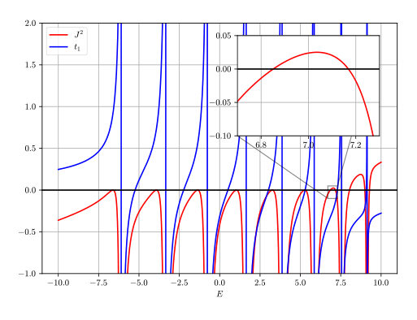
<figcaption class="paper-figure-caption"><b>Fig 1.</b> FIG. 1. We compute t1 = ⟨cos(θ)⟩E and J2(E) as a function of the energy at λ = 4 for the cosine potential model. We truncate the plot for t1 for visual clarity. All quantities are dimensionless in the plot.</figcaption>
</figure>
<figure class="paper-figure-card">
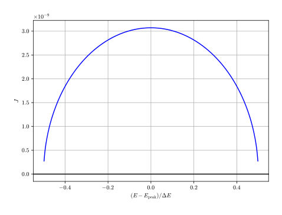
<figcaption class="paper-figure-caption"><b>Fig 2.</b> FIG. 2. We compute J(E) as a function of the energy at λ = 4 for the first band. All quantities are dimensionless in the plot. The central value is at E = Epeak = −6.617777867418. The bandwidth is ∆E ≃6 × 10−9 for this case.</figcaption>
</figure>
<figure class="paper-figure-card">
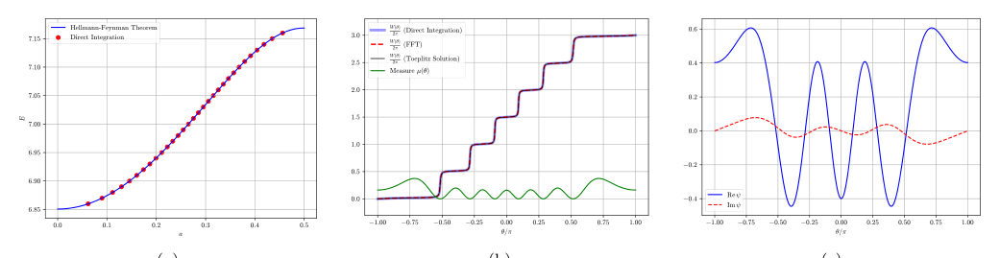
<figcaption class="paper-figure-caption"><b>Fig 3.</b> FIG. 3. For the seventh band the plots depict (a) the dispersion relation E(a) computed by two different methods (b) the measure µ(θ) and the phase W(θ) calculated in three ways and (c) the real and imaginary parts of the wavefunction ψ. The plots (b) and (c) correspond to the lowest red point in (a).</figcaption>
</figure>
</div>

<p><strong>Summary.</strong> This work develops a quantum mechanical bootstrap method to solve the Schrödinger equation for a particle on a circle with a periodic potential. By analyzing the asymptotic behavior of the wavefunction's Fourier coefficients, the authors derive an analytical, continued fraction representation for the energy spectrum. This provides a powerful, non-perturbative tool for calculating band structures and the density of states.</p>
<p><strong>Why it may be interesting.</strong> The rigorous application of the bootstrap method to find exact spectral properties (like band gaps) for periodic potentials is a powerful theoretical technique applicable to many-body systems and quantum field theories.</p>
<details>
<summary>Detailed structure</summary>
<p><strong>Main problem.</strong> The paper solves the time-independent Schrödinger equation for a particle confined to a circle with a periodic potential using a quantum mechanical bootstrap method.</p>
<p><strong>Main result.</strong> The method yields an analytical solution for the energy spectrum and density of states, represented by generalized continued fractions, and successfully reproduces known band structures.</p>
<p><strong>Method.</strong> The core method involves applying a bootstrap consistency condition to the Fourier coefficients of the measure, leading to recursion relations solvable via continued fractions. This is complemented by relating the energy dispersion relation to the probability current.</p>
<p><strong>Model / system.</strong> The system is a quantum particle on a circle ($ heta \in (-\pi, \pi)$) governed by the Hamiltonian $\hat{H} = -rac{1}{2}(D_	heta)^2 + V(	heta)$, where $V(	heta)$ is a periodic potential. The covariant derivative $D_	heta$ introduces a non-trivial holonomy parameter $a$.</p>
<p><strong>Key observables.</strong> Energy eigenvalues ($E$), the density of states ($
ho$), the quasimomentum ($a$), and the probability current ($J$).</p>
<p><strong>Important parameters / regimes.</strong> The coupling constant $\lambda$ (e.g., $\lambda=4$ for the cosine potential) and the boundary condition parameter $a$.</p>
<p><strong>Assumptions / limitations.</strong> The solution is assumed to be determined by the exponentially decaying (minimal) solutions to the recursion relations, and the method relies on the convergence of the bootstrap inequalities.</p>
<p><strong>Figures summary.</strong> Figures illustrate the calculated dispersion relation $E(a)$ using two independent methods, the measure $\mu(	heta)$, and the phase $W(	heta)$, showing agreement across different computational techniques.</p>
<p><strong>Paper structure.</strong> The paper develops the bootstrap method by analyzing the recursion relations for Fourier coefficients, deriving the differential equation for the wavefunction modulus $R(	heta)$, and finally calculating the density of states and the dispersion relation $E(a)$ using multiple consistent approaches.</p>
</details>
<details>
<summary>Abstract</summary>
<p>We solve the Schrödinger equation for a particle in the circle with a quantum mechanical bootstrap method. The main idea is that in physical situations one needs solutions of the recursion relations for the Fourier coefficients of the measure that vanish exponentially fast. We show that this results in a (generalized) continued fraction representation of the solution. The solution is an analytical function of the couplings and the energy. We also show how one this method directly computes the density of states and checking that the answer is physical is reduced to checking an inequality for a single variable. We also show how to reconstruct the wave function and how to extract the quasimomentum of the particle as a function of the energy. We illustrate our solution in the simplest case of the Mathieu equation, where we show that the method can easily resolve exponentially small bands in the band spectrum.</p>
</details>
<p><sub><a href="#top">↑ back to top</a></sub></p>

<p><a id="paper-2610.37300"></a></p>
<h3 id="perfect-sampling-of-ising-spin-glasses-with-bounding-chains"><a href="http://arxiv.org/abs/2610.37300v1">Perfect sampling of Ising spin glasses with bounding chains</a></h3>
<p><strong>Authors:</strong> Lukas Péron, Louise Budzynski<br>
<strong>Type:</strong> both · <strong>Category:</strong> disordered systems and neural networks · <strong>PDF:</strong> <a href="https://arxiv.org/pdf/2610.37300v1">https://arxiv.org/pdf/2610.37300v1</a><br>
<strong>Analysis basis:</strong> full PDF text, analyzed in chunks
<strong>Topic relevance:</strong> <code>analog quantum simulation</code> <strong>2/5</strong> · <code>Frenkel-Kontorova</code> <strong>1/5</strong></p>
<div class="figure-strip-hint">↔ Scroll figures horizontally</div>
<div class="paper-figures-scroll">
<figure class="paper-figure-card">
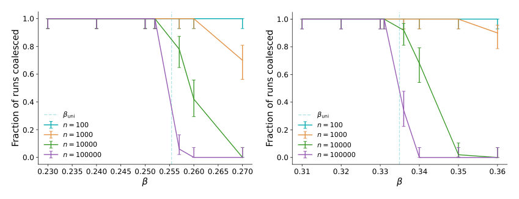
<figcaption class="paper-figure-caption"><b>Fig 1.</b> Figure 1: Fraction of coalesced runs on G(n, d/n) with d = 4, i.i.d. uniform couplings in {+1, −1} (left panel) and i.i.d. standard Gaussian couplings (right panel). We set Thor = 109 single-site updates, and nruns = 50. The corresponding tree-uniqueness threshold is βuni ≃0.2554 (left) and βuni ≃0.3349 (right).</figcaption>
</figure>
<figure class="paper-figure-card">
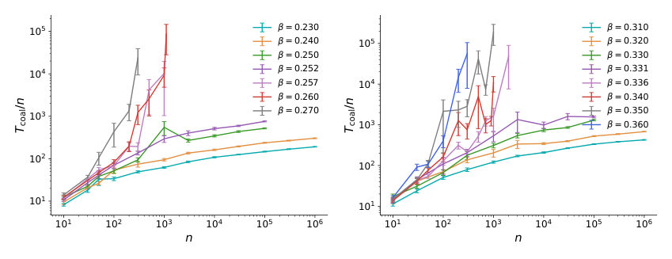
<figcaption class="paper-figure-caption"><b>Fig 2.</b> Figure 2: Empirical mean of the rescaled coalescence time Tcoal/n as a function of n on logarithmic axes, for G(n, d/n) with d = 4. Couplings are i.i.d., drawn uniformly from {+1, −1} (left) or from the standard Gaussian distribution (right).</figcaption>
</figure>
<figure class="paper-figure-card">
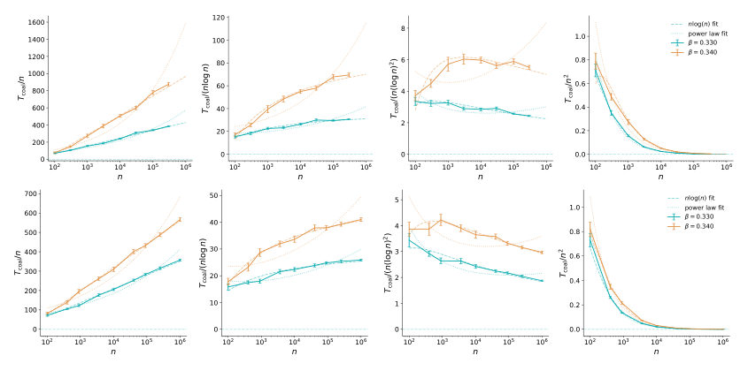
<figcaption class="paper-figure-caption"><b>Fig 3.</b> Figure 3: Rescaled empirical mean coalescence time as a function of n, on random 4-regular graphs (top panels) and on periodic 2-dimensional lattices (bottom panels). Couplings are i.i.d. drawn from {+1, −1}. The curves show the corresponding rescalings of two fits: Tcoal = an log n + bn (dashed line) and Tcoal = cnδ (dotted line)</figcaption>
</figure>
<figure class="paper-figure-card">
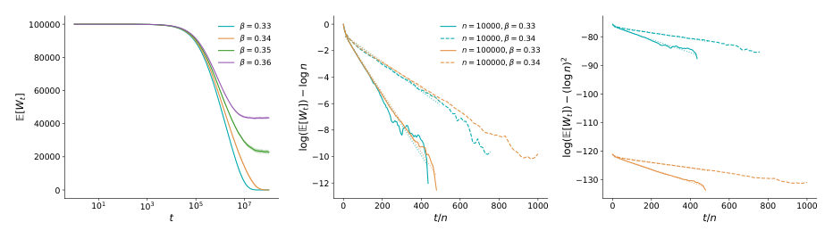
<figcaption class="paper-figure-caption"><b>Fig 4.</b> Figure 4: Evolution of the mean number of unresolved sites E[Wt] on random d-regular graphs with d = 4, i.i.d. couplings uniform in {+1, −1}, averaged over 50 independent runs. Left panel: E[Wt] as a function of the number of single-site updates, for n = 105</figcaption>
</figure>
<figure class="paper-figure-card">
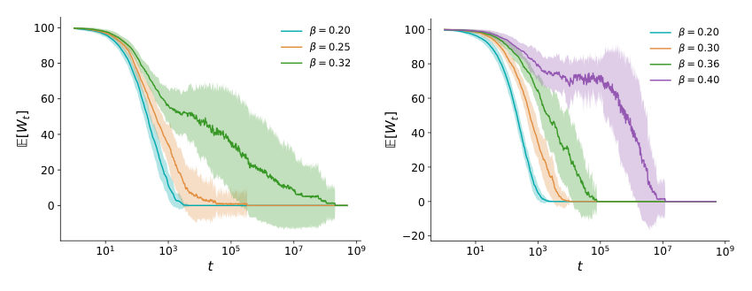
<figcaption class="paper-figure-caption"><b>Fig 5.</b> Figure 5: Number of unresolved (star) sites against iterations, averaged over nruns = 50 runs, for β values below and above βuni on small system sizes (n = 100), on G(n, 4/n) (left panel, βuni ≃0.255413) and on random 4-regular graphs (right panel, βuni ≃0.346574) with i.i.d. couplings uniform in {+1, −1}.</figcaption>
</figure>
</div>

<p><strong>Summary.</strong> This work analyzes perfect sampling algorithms for Ising spin glasses using bounding chains, establishing theoretical bounds on coalescence time for certain random graph structures. The authors compare these results across different graph types, demonstrating that algorithmic efficiency is limited by factors like the tightness of the bounding envelope or the onset of damage spreading. This provides critical insights into the computational feasibility of simulating complex disordered quantum systems.</p>
<p><strong>Why it may be interesting.</strong> While focused on classical statistical mechanics, the techniques for analyzing convergence rates and identifying algorithmic thresholds in complex energy landscapes (like spin glasses) are highly relevant to understanding dynamics in quantum many-body systems and quantum simulation algorithms.</p>
<details>
<summary>Detailed structure</summary>
<p><strong>Main problem.</strong> The paper investigates the efficiency and theoretical limits of perfect sampling algorithms, specifically using bounding chains, for Ising spin glasses.</p>
<p><strong>Main result.</strong> The authors prove rapid coalescence of the bounding chain in the tree-uniqueness regime for Gaussian couplings on random graphs, while observing limitations due to the bounding envelope or damage spreading on lattices and the SK model.</p>
<p><strong>Method.</strong> The study combines theoretical proofs, adapting coupling estimates from block dynamics, with extensive numerical simulations across various graph families.</p>
<p><strong>Model / system.</strong> The system is the Ising spin glass defined on a graph G=(V, E) with a Gibbs measure governed by couplings J. The analysis covers sparse random graphs, periodic lattices, and the Sherrington-Kirkpatrick model.</p>
<p><strong>Key observables.</strong> Coalescence time ($T_{	ext{coal}}$) of the bounding chain, damage spreading, and the tree-uniqueness regime.</p>
<p><strong>Important parameters / regimes.</strong> Inverse temperature ($eta$), graph connectivity ($d$), and the system size ($n$).</p>
<p><strong>Assumptions / limitations.</strong> The analysis often relies on the Dobrushin condition or the assumption of the tree-uniqueness regime for establishing rapid mixing/coalescence.</p>
<p><strong>Figures summary.</strong> Figures show empirical scaling of the rescaled coalescence time ($T_{	ext{coal}}/n$) for various graph models (random $d$-regular, lattices, SK) and the evolution of the mean number of unresolved sites ($E[W_t]$) over time.</p>
<p><strong>Paper structure.</strong> The paper progresses by defining the sampling problem, developing the bounding chain framework, proving coalescence for specific random graph models, and then empirically testing and analyzing the limitations of this method on lattices and the SK model.</p>
</details>
<details>
<summary>Abstract</summary>
<p>We study perfect sampling algorithms for Ising spin glasses based on coupling from the past and bounding chains, on several graph families and coupling distributions. For the single-site bounding chain, we establish coalescence in $O(n\log n)$ updates under Dobrushin conditions. On sparse random graphs, our numerical results suggest that efficient sampling extends throughout the tree-uniqueness regime, with a slowdown beyond this threshold. On Erdős-Rényi random graphs $\mathcal{G}(n,d/n)$ with standard Gaussian couplings, we introduce a block bounding chain and prove its coalescence in $O(n\log n)$ block updates in the tree-uniqueness regime for sufficiently large $d$, each block update requiring $O(n)$ operations, adapting a proof in~\cite{Efthymiou_Zampetakis_2024} for the rapid mixing of block Glauber dynamics. On periodic lattices, our experiments instead suggest that the single-site bounding chain is limited by the looseness of its bounding envelope, whereas on the Sherrington-Kirkpatrick model, slow coalescence is accompanied by damage spreading at every inverse temperature tested. These observations motivate alternative bounding representations and couplings as strategies to improve perfect sampling on spin glasses.</p>
</details>
<p><sub><a href="#top">↑ back to top</a></sub></p>

<p><a id="paper-2610.36904"></a></p>
<h3 id="replica-analysis-of-overfitting-in-vector-generalized-linear-models"><a href="http://arxiv.org/abs/2610.36904v1">Replica Analysis of Overfitting in Vector Generalized Linear Models</a></h3>
<p><strong>Authors:</strong> M Diaz-Ortiz, ACC Coolen<br>
<strong>Type:</strong> theory · <strong>Category:</strong> disordered systems and neural networks · <strong>PDF:</strong> <a href="https://arxiv.org/pdf/2610.36904v1">https://arxiv.org/pdf/2610.36904v1</a><br>
<strong>Analysis basis:</strong> full PDF text, analyzed in chunks
<strong>Topic relevance:</strong> <code>Keldysh / 2PI / non-Gaussian methods</code> <strong>2/5</strong> · <code>methods for driven-dissipative</code> <strong>1/5</strong></p>
<div class="figure-strip-hint">↔ Scroll figures horizontally</div>
<div class="paper-figures-scroll">
<figure class="paper-figure-card">
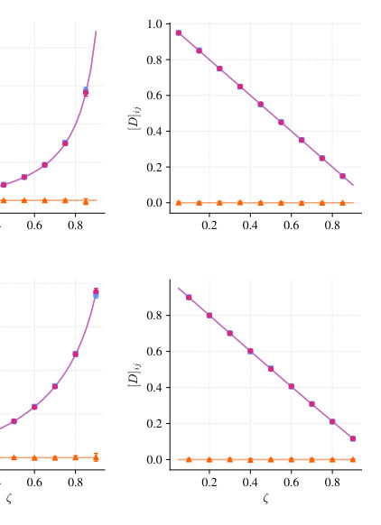
<figcaption class="paper-figure-caption"><b>Fig 1.</b> Figure 1. Estimated and theoretical values of matrix order parameters W W T (left), V V T (center), and nuisance parameter D (right) for data generated from both a weakly (top) and higher (bottom) regularised, η = 0.001 and η = 0.1 respectively, multivariate-linear regression model with NP = 108 and M = 2 with uncorrelated teacher classes. We see the characteristic signal of overfitting within this model, where noise is increasingly mistaken for signal, increasing the level of variance between the fit parameters and the teacher. This remains true when regularisation strength increases, where some variance increase can be mitigated at the cost of a shrinkage bias.</figcaption>
</figure>
<figure class="paper-figure-card">
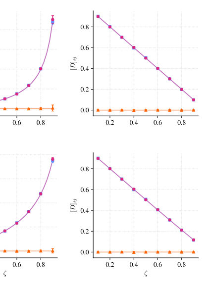
<figcaption class="paper-figure-caption"><b>Fig 2.</b> Figure 2. Estimated and theoretical values of matrix order parameters W W T (left), V V T (center), and nuisance parameter D (right) for data generated from both a weakly (top) and higher (bottom) regularised, η = 0.001 and η = 0.1 respectively, multivariate-linear regression model with NP = 108 and M = 2 with correlated teacher classes with strength σ = 0.2. The behaviour is similar to figure 1, but with the additional cross component term becoming non-zero.</figcaption>
</figure>
<figure class="paper-figure-card">
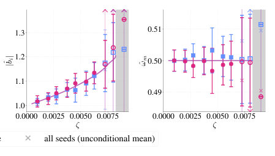
<figcaption class="paper-figure-caption"><b>Fig 3.</b> Figure 3. Estimated values (markers with error bars) and theoretically predicted values (lines) of the matrix order parameters W W T . and V V T, the biases b, and the class weighting ω, for data generated by the unregularized baseline latent logistic regression model. Points where all simulations converged are indicated with filled markers, unfilled markers represent ζ values where not all simulations converged (and averages are computed only over those that did). The region where our solver no longer finds a solution of our RS order parameter equations is shown in gray. We see the expected overfitting signature, but note that it is made more extreme in this present model, resulting in...</figcaption>
</figure>
<figure class="paper-figure-card">
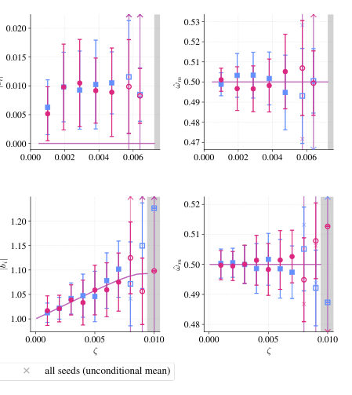
<figcaption class="paper-figure-caption"><b>Fig 4.</b> Figure 4. Estimated values (markers with error bars) and theoretically predicted values (lines) of the matrix order parameters W W T and V V T, the magnitude of biases b, and class weights ω, for data generated by the zero bias (top) and correlated baseline (bottom) models. Points where all simulations converged are indicated with filled markers, unfilled markers represent ζ values where not all simulations converged (and averages are computed only over those that did). The region where the RS solver cannot go beyond is shown in gray. Top: the removal of the bias makes the inference task harder, reducing the region of existence of solutions. Bottom: correlations make the task easier,...</figcaption>
</figure>
<figure class="paper-figure-card">
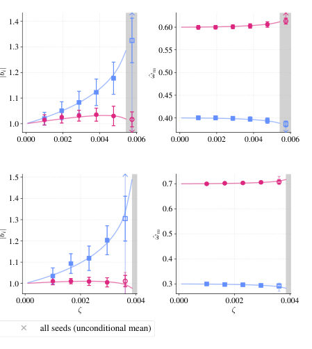
<figcaption class="paper-figure-caption"><b>Fig 5.</b> Figure 5. Estimated values (markers with error bars) and theoretically predicted values (lines) of the matrix order parameters W W T and V V T, the magnitude of biases b, and class weights ω, for data generated by the unregularised baseline but with class imbalances ω0 = 0.4 (top) and ω0 = 0.3. Points where all simulations converged are indicated with filled markers, the others by unfilled markers, and the region where the RS solver no longer finds solutions of the order parameter equations is shown in gray. In both cases the class with lower weight experiences greater overfitting, and the greater the imbalance, the more extreme this overfitting becomes.</figcaption>
</figure>
</div>

<p><strong>Summary.</strong> This paper extends the statistical physics theory of overfitting from simple GLMs to complex Vector Generalized Linear Models (VGLMs). It uses the replica method to derive the asymptotic behavior of parameter estimation in these overparameterized models. The work provides a powerful theoretical tool for understanding the limitations of data analysis in high-dimensional settings.</p>
<p><strong>Why it may be interesting.</strong> While the core topic is statistical inference, the methodology—using replica analysis to solve complex, high-dimensional parameter estimation problems—shares deep mathematical parallels with techniques used in spin glass theory and disordered systems.</p>
<details>
<summary>Detailed structure</summary>
<p><strong>Main problem.</strong> The paper generalizes the statistical physics theory of overfitting from standard Generalized Linear Models (GLMs) to the more complex Vector Generalized Linear Models (VGLMs).</p>
<p><strong>Main result.</strong> The theory is successfully generalized to VGLMs, providing a solvable framework for analyzing overfitting in these complex regression models using the replica method.</p>
<p><strong>Method.</strong> The analysis employs replica analysis, reformulating the Maximum A Posteriori (MAP) estimation as a minimization of the Kullback-Leibler divergence, and solving the resulting order parameter equations within the replica symmetric (RS) ansatz.</p>
<p><strong>Model / system.</strong> The model is the VGLM, where the outcome is driven by an arbitrary finite number of linear combinations of covariates. The analysis is framed in the context of statistical inference and parameter estimation.</p>
<p><strong>Key observables.</strong> Overfitting-induced inference bias ($\langlear{B}_{rm}
angle$) and inference fluctuations (second-order moments).</p>
<p><strong>Important parameters / regimes.</strong> The ratio of parameters to samples ($\zeta = P/N$), the number of linear combinations ($M$), and the replica symmetry ansatz.</p>
<p><strong>Assumptions / limitations.</strong> The analysis assumes a 'student-teacher scenario' (no model mismatch), independent data samples, and relies on asymptotic limits ($N, P 	o \infty$).</p>
<p><strong>Figures summary.</strong> Not specified in the notes, but the structure suggests deriving and solving coupled equations for order parameters like W, V, U, J, and L.</p>
<p><strong>Paper structure.</strong> The paper progresses by first establishing the VGLM framework, reformulating the estimation problem via KL divergence minimization, and then applying the replica method. It derives order parameter equations, solves them in the RS ansatz, and finally applies the theory to specific VGLM regression models.</p>
</details>
<details>
<summary>Abstract</summary>
<p>We show how the successful recent statistical physics based theory of overfitting in Generalized Linear Models (GLMs) can be generalized to a much larger family of regression models: the so-called Vector Generalized Linear Models (VGLMs), in which not a single linear combination of covariates drives the outcome, but where one has an arbitrary finite number of such linear combinations. The latter more general and complex models can describe more sophisticated statistical patterns in data, but are even more prone to overfitting than GLMs due to their significantly larger number of parameters; this often limits their use. We show that the generalization of the overfitting theory from GLMs to VGLMs causes many mathematical challenges that were absent from the earlier work, mostly related to the increased dimensional complexity of all order parameters in the theory, but that the new problem is once more solvable using the replica method. This opens up the field to many novel and welcome applications, especially in post-genome medical inference and data analysis, where overfitting is and remains a major barrier to progress. After developing the general VGLM overfitting theory, within the replica symmetric (RS) ansatz, we illustrate its merits and its correctness via application to several relevant VGLM regression models.</p>
</details>
<p><sub><a href="#top">↑ back to top</a></sub></p>

<p><a id="paper-2610.36199"></a></p>
<h3 id="three-dimensional-quantum-hall-insulators-in-magnetic-pyrochlore-systems"><a href="http://arxiv.org/abs/2610.36199v1">Three-dimensional quantum Hall insulators in magnetic pyrochlore systems</a></h3>
<p><strong>Authors:</strong> Ze-Xun Lin, Robert-Jan Slager, Claudio Castelnovo<br>
<strong>Type:</strong> theory · <strong>Category:</strong> strongly correlated electrons · <strong>PDF:</strong> <a href="https://arxiv.org/pdf/2610.36199v1">https://arxiv.org/pdf/2610.36199v1</a><br>
<strong>Analysis basis:</strong> full PDF text, analyzed in chunks
<strong>Topic relevance:</strong> <code>analog quantum simulation</code> <strong>2/5</strong> · <code>interference shaping light</code> <strong>1/5</strong></p>
<div class="figure-strip-hint">↔ Scroll figures horizontally</div>
<div class="paper-figures-scroll">
<figure class="paper-figure-card">
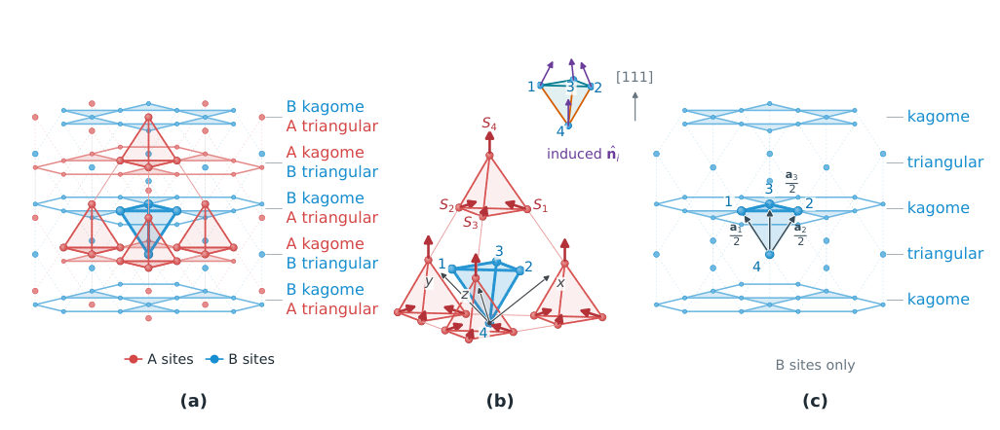
<figcaption class="paper-figure-caption"><b>Fig 1.</b> FIG. 1. Lattice structure of A2B2O7. (a) Interpenetrating pyrochlore lattices of localized A-site moments (red) and itinerant B-site electrons (blue). The highlighted motif contains four A-tetrahedra surrounding a B-tetrahedron. (b) Three-in/one-out A-site moments (red arrows), global cubic axes, and the resulting B-site exchange-field directions (inset). The numbers indicate the four sublattices of each pyrochlore lattice. (c) Viewed along [111], the B lattice alternates between kagome planes (sites 1–3) and triangular planes (site 4).</figcaption>
</figure>
<figure class="paper-figure-card">
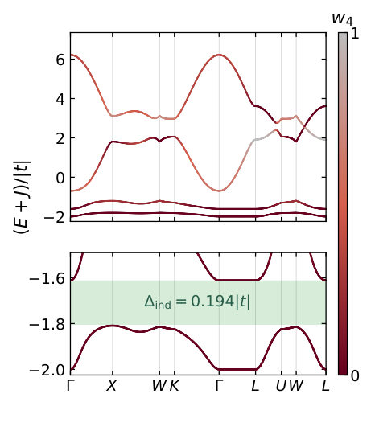
<figcaption class="paper-figure-caption"><b>Fig 2.</b> FIG. 2. Projected bands for J = 4|t|, Jex,4 = rJ, tij = t &lt; 0, and λij = 0. The lower panel enlarges the lowest-band gap. Colors give the site-4 probability. Energies are shifted by +J for convenience. These parameters are also used in Figs. 3 and 4.</figcaption>
</figure>
<figure class="paper-figure-card">
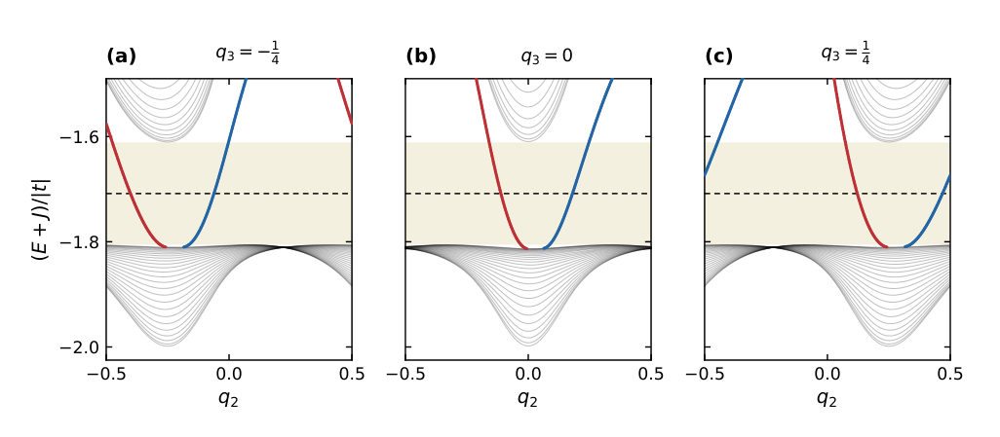
<figcaption class="paper-figure-caption"><b>Fig 3.</b> FIG. 3. Finite-slab energy spectrum at q3 = −1/4, 0, 1/4 for a slab composed of N = 28 unit-cell layers parallel to the 234 plane. Gray curves are the slab bands. Red and blue highlight edge states, identified here as band states that have at least half their probability in the outermost three unit-cell layers (top: red; bottom: blue; with respect to the axis perpendicular to the 234 plane). Pale-yellow shading marks the bulk indirect gap; the dashed line is its midpoint, eµ ≃−1.708|t|.</figcaption>
</figure>
<figure class="paper-figure-card">
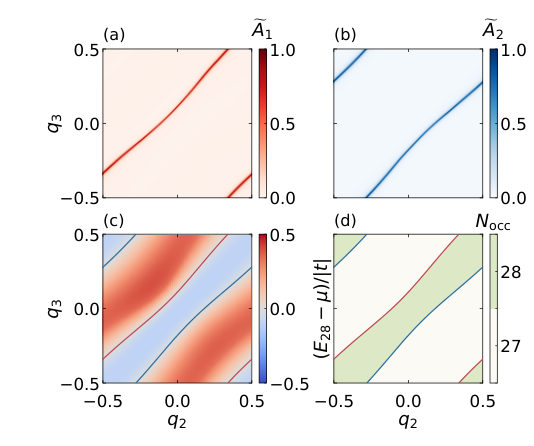
<figcaption class="paper-figure-caption"><b>Fig 4.</b> FIG. 4. Surface Fermi loops and Fermi river at the gap midpoint. (a,b) Normalized near-µ spectral intensity on the two faces. (c) Signed energy E28−µ, with the two face-resolved zero contours. (d) Occupied-level count: the Nocc = 28 strip is bounded by these loops, while the complement has Nocc = 27. Opposite edges are identified; each loop winds geometrically as (1, 1) on the surface Brillouin-zone torus.</figcaption>
</figure>
</div>

<p><strong>Summary.</strong> This paper demonstrates a theoretical route to achieving three-dimensional Quantum Hall insulators in magnetic pyrochlore materials. The key mechanism involves using a non-coplanar magnetic texture to induce complex hopping phases, which reconstruct the electronic bands and yield a quantized bulk Hall response. This work establishes a new design principle for realizing 3D topological matter using magnetic interactions.</p>
<p><strong>Why it may be interesting.</strong> The work provides a concrete, magnetically tunable mechanism to achieve 3D topological phases, extending the concept of QH physics beyond simple layered structures and linking it to magnetic ordering.</p>
<details>
<summary>Detailed structure</summary>
<p><strong>Main problem.</strong> The primary goal is to realize and characterize three-dimensional (3D) Quantum Hall (QH) insulators, a phenomenon typically confined to 2D systems.</p>
<p><strong>Main result.</strong> The system realizes a 3D QH phase characterized by a quantized bulk Hall response ($\sigma_{xy} = e^2/(ha)$) and robust chiral surface spectral flow, driven by magnetic texture and band interference.</p>
<p><strong>Method.</strong> The study employs theoretical modeling using tight-binding Hamiltonians, analyzing topological invariants like Chern numbers, and performing calculations in the strong-coupling limit.</p>
<p><strong>Model / system.</strong> The model consists of itinerant electrons on a pyrochlore lattice Kondo-coupled to localized magnetic moments on an interpenetrating pyrochlore lattice. The physics is governed by the interplay between magnetic texture, resulting in complex spin-dependent hopping, and quantum interference effects.</p>
<p><strong>Key observables.</strong> Quantized bulk Hall conductivity ($\sigma_{yz}=\sigma_{zx}=\sigma_{xy}=e^2/(ha)$), Chern triplet $\mathbf{C}=(1,1,1)$, and noncontractible Fermi loops at the surface.</p>
<p><strong>Important parameters / regimes.</strong> The magnetic texture (field-selected three-in/one-out), the ratio of exchange coupling to hopping ($J/|t|$), and the strength of non-local Kondo exchange ($J'_K/J_K$).</p>
<p><strong>Assumptions / limitations.</strong> The analysis often proceeds in the strong-coupling limit, and the initial focus neglects spin-orbit coupling (SOC) and assumes specific magnetic textures.</p>
<p><strong>Figures summary.</strong> Figures illustrate the lattice structure, finite-slab energy spectra showing in-gap states, and surface Brillouin zone plots revealing noncontractible Fermi loops and a 'Fermi river' at the gap midpoint.</p>
<p><strong>Paper structure.</strong> The paper develops the model by first establishing the Hamiltonian, then analyzing the role of the magnetic texture in generating complex phases, demonstrating the topological quantization of the Hall response, and finally testing the robustness of this phase against weak interactions and non-local couplings.</p>
</details>
<details>
<summary>Abstract</summary>
<p>We show that a class of pyrochlore materials provides a route to realize 3D Quantum Hall insulators, based on magnetic texture and flat band interference. We study itinerant electrons on a pyrochlore lattice Kondo-coupled to localized moments living on another interpenetrating pyrochlore lattice, with the moments forming a field-selected three-in/one-out texture. The noncoplanar texture generates complex spin-dependent hopping amplitudes and unequal local exchange energies, reconstructing the compact-localized parent flat bands into narrow bands separated by a global three-dimensional gap. The low-energy states are concentrated predominantly on kagome planes within the three-dimensional lattice, reflecting the combined effects of quantum interference and the texture-induced sublattice potential. When the lowest band is fully occupied, the response is characterized by a Chern triplet $\mathbf{C}=(1,1,1)$ and reciprocal Hall vector $\mathbf{G}_{\mathrm{H}}=(2π/a)(1,1,1)$, giving $σ_{yz}=σ_{zx}=σ_{xy}=e^2/(ha)$. The quantized bulk Hall response enforces chiral surface spectral flow, visible as noncontractible Fermi loops at the surface. Our work opens a new direction in the search for three-dimensional quantum Hall physics in magnetic pyrochlore systems, and suggests a broad design principle based on the interplay of magnetic texture and flat-band interference.</p>
</details>
<p><sub><a href="#top">↑ back to top</a></sub></p>

<p><a id="paper-2610.36076"></a></p>
<h3 id="an-algebraic-characterisation-of-math465math-qubit-pure-state-invariants"><a href="http://arxiv.org/abs/2610.36076v1">An algebraic characterisation of $n$-qubit pure-state invariants</a></h3>
<p><strong>Authors:</strong> Markus Frembs<br>
<strong>Type:</strong> theory · <strong>Category:</strong> quantum information and computing · <strong>PDF:</strong> <a href="https://arxiv.org/pdf/2610.36076v1">https://arxiv.org/pdf/2610.36076v1</a><br>
<strong>Analysis basis:</strong> full PDF text, analyzed in chunks
<strong>Topic relevance:</strong> <code>quantum measurements</code> <strong>2/5</strong></p>
<div class="figure-strip-hint">↔ Scroll figures horizontally</div>
<div class="paper-figures-scroll">
<figure class="paper-figure-card">
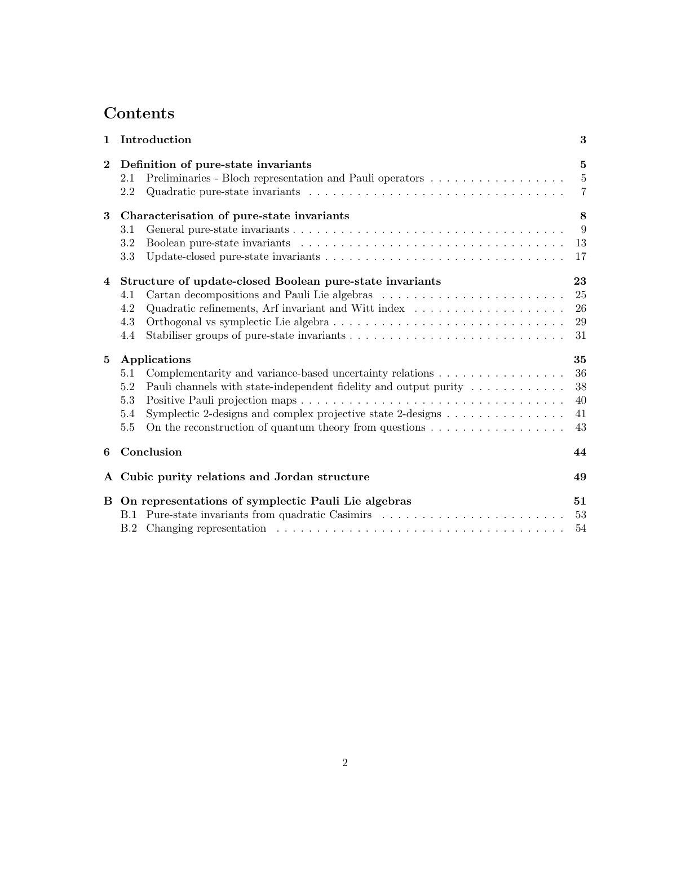
<figcaption class="paper-figure-caption"><b>Fig 1.</b> Low-resolution page preview, page 2</figcaption>
</figure>
<figure class="paper-figure-card">
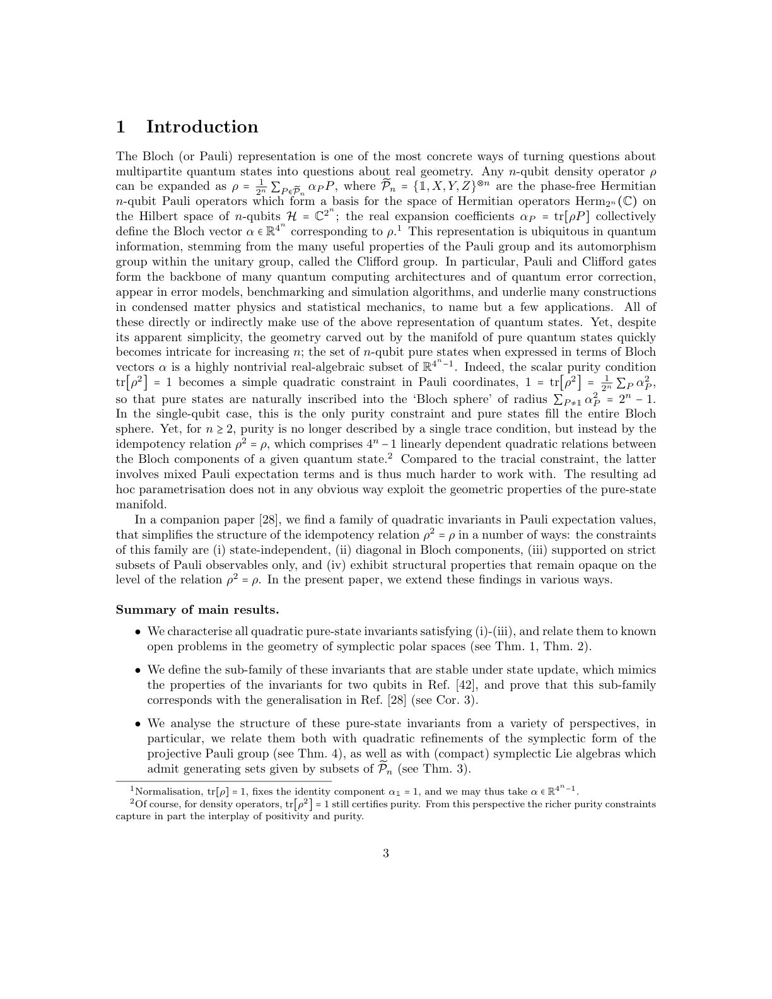
<figcaption class="paper-figure-caption"><b>Fig 2.</b> Low-resolution page preview, page 3</figcaption>
</figure>
<figure class="paper-figure-card">
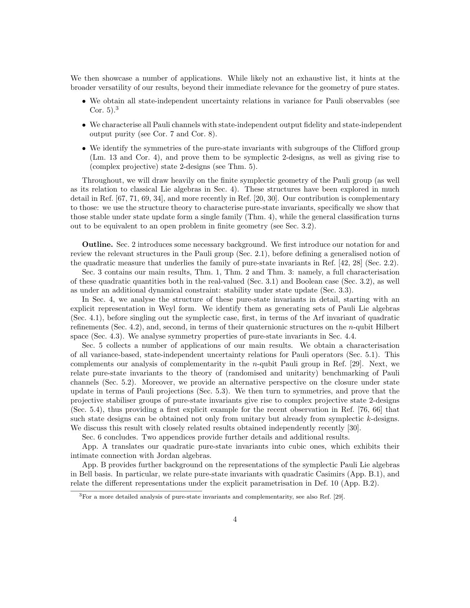
<figcaption class="paper-figure-caption"><b>Fig 3.</b> Low-resolution page preview, page 4</figcaption>
</figure>
<figure class="paper-figure-card">
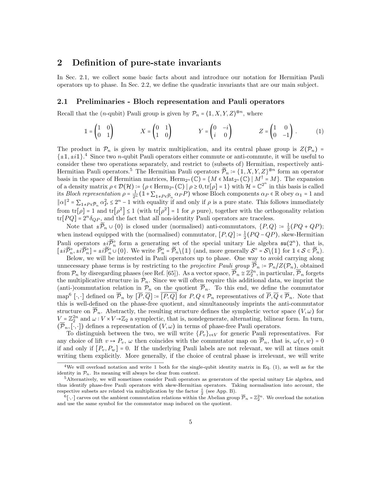
<figcaption class="paper-figure-caption"><b>Fig 4.</b> Low-resolution page preview, page 5</figcaption>
</figure>
<figure class="paper-figure-card">
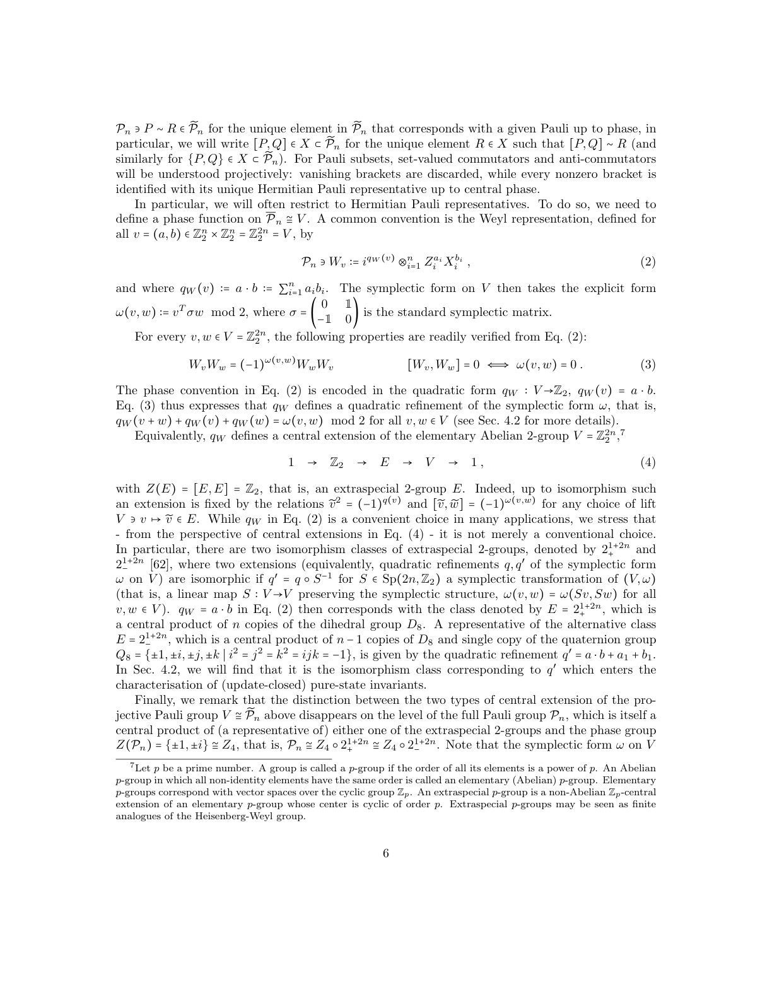
<figcaption class="paper-figure-caption"><b>Fig 5.</b> Low-resolution page preview, page 6</figcaption>
</figure>
</div>

<p><strong>Summary.</strong> This theoretical paper characterizes the mathematical structure of invariants that remain constant for any pure state of $n$ qubits. It establishes a deep connection between these quantum invariants and the geometry of symplectic Lie algebras. The findings characterize state-independent uncertainty relations and constrain the behavior of quantum channels.</p>
<p><strong>Why it may be interesting.</strong> It provides deep mathematical constraints on the structure of quantum states, which can inform the design of robust quantum measurements or characterize fundamental limitations in quantum information processing.</p>
<details>
<summary>Detailed structure</summary>
<p><strong>Main problem.</strong> The paper aims to fully characterize all state-independent invariants for $n$-qubit pure quantum states, which are functions of Pauli expectation values.</p>
<p><strong>Main result.</strong> The invariants are strongly tied to the geometry of symplectic polar spaces, and the update-closed subset corresponds to symplectic Lie algebras $\mathfrak{sp}(2^{n-1})\subset\mathfrak{su}(2^n)$.</p>
<p><strong>Method.</strong> The analysis uses the Bloch (Pauli) representation, defining quadratic and cubic invariants, and relating these constraints to the structure of symplectic and orthogonal Lie algebras.</p>
<p><strong>Model / system.</strong> The system is the $n$-qubit pure quantum state, represented by its density matrix $
ho$ and analyzed via its Pauli expectation values ($\alpha_P$). The mathematical framework heavily involves the projective Pauli group and its associated symplectic structure.</p>
<p><strong>Key observables.</strong> State-independent quadratic and cubic functions of Pauli expectation values, purity ($ ext{tr}[
ho^2]$), and output fidelity/purity for quantum channels.</p>
<p><strong>Important parameters / regimes.</strong> The number of qubits, $n$, and the structure of the Pauli group $P_n$ as a symplectic vector space.</p>
<p><strong>Assumptions / limitations.</strong> The analysis assumes the state is pure, and it distinguishes between the symplectic and orthogonal cases using the Arf invariant.</p>
<p><strong>Figures summary.</strong> Not specified in the notes, but the analysis relies on algebraic structures like the symplectic form $\omega$ and the quadratic Casimir element $C_{\mathfrak{l}A}$.</p>
<p><strong>Paper structure.</strong> The paper progresses from characterizing general quadratic invariants (Sec. 3) to the update-closed subset (Sec. 3.3), then analyzing the algebraic structure using Lie algebras (Sec. 4), and finally applying these findings to uncertainty relations and quantum channels (Sec. 5).</p>
</details>
<details>
<summary>Abstract</summary>
<p>We study the set of $n$-qubit pure quantum states. Specifically, we consider their incarnation as density matrices in Bloch representation. Building on prior work, we define a family of quadratic functions in Pauli expectation values, and fully characterise all instances that result in state-independent purity constraints. The resulting family of pure-state invariants is surprisingly rich in structure, with strong ties to the geometry of symplectic polar spaces. After charting the general landscape, we define a sub-family of pure-state invariants that satisfies the dynamical constraint of being stable under state update. We prove that it corresponds with (different embeddings of) symplectic Lie algebras $\mathfrak{sp}(2^{n-1})\subset\mathfrak{su}(2^n)$, which admit a generating set of Pauli operators. We carefully distinguish the symplectic case from its orthogonal counterpart, using the Arf invariant of quadratic refinements of the symplectic form on the projective Pauli group, which we further identify with quaternionic structures on $\mathbb{C}^{2^n}$ that are both generated by and restricted to Pauli operators. As a consequence of this analysis, we reveal previously largely overlooked structure in the $n$-qubit Pauli group. We highlight this in a number of examples. We characterise all state-independent uncertainty relations in variance for Pauli observables, as well as all Pauli channels for which the output fidelity and output purity are state-independent. We further show that the orbits of the projective stabiliser groups of pure-state invariants, which for $n\geq2$ are proper subgroups of the Clifford group, form complex projective state $2$-designs, while their unitary lifts form symplectic $2$-designs.</p>
</details>
<p><sub><a href="#top">↑ back to top</a></sub></p>

<p><a id="paper-2610.36118"></a></p>
<h3 id="ensemble-dependent-condensate-statistics-and-correlations-in-an-ideal-bose-gas"><a href="http://arxiv.org/abs/2610.36118v1">Ensemble-dependent condensate statistics and correlations in an ideal Bose gas</a></h3>
<p><strong>Authors:</strong> Szymon Augustynowicz, Jan Okoński, Maciej B. Kruk, Ilja Zebergs, Jan Joachim Arlt, Kazimierz Rzążewski, Krzysztof Pawłowski<br>
<strong>Type:</strong> theory · <strong>Category:</strong> quantum gases · <strong>PDF:</strong> <a href="https://arxiv.org/pdf/2610.36118v1">https://arxiv.org/pdf/2610.36118v1</a><br>
<strong>Analysis basis:</strong> full PDF text, analyzed in chunks
<strong>Topic relevance:</strong> <code>Keldysh / 2PI / non-Gaussian methods</code> <strong>2/5</strong></p>
<div class="figure-strip-hint">↔ Scroll figures horizontally</div>
<div class="paper-figures-scroll">
<figure class="paper-figure-card">
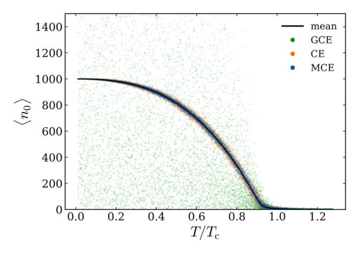
<figcaption class="paper-figure-caption"><b>Fig 1.</b> FIG. 1. Ensemble dependence of condensate-number fluctua- tions for an ideal Bose gas with N = 1000 in the canonical and microcanonical ensembles and ⟨N⟩= 1000 in the grand canon- ical ensemble. Dots are simulated single realizations of the condensate occupation n0 (20 shots per temperature) in the grand canonical (green), canonical (orange), and microcanoni- cal (blue) ensembles. The mean condensate occupation is the same to leading order in N in all three ensembles and is shown as a single black line. The spread of the individual realizations is not: the grand canonical ensemble scatters over a range of order N even well below Tc, whereas fixing the atom number, and then also the energy,...</figcaption>
</figure>
<figure class="paper-figure-card">
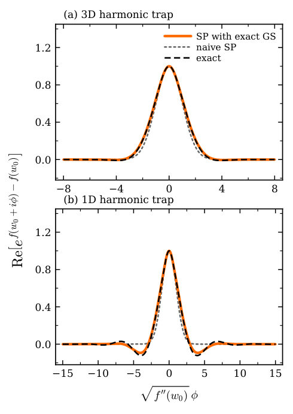
<figcaption class="paper-figure-caption"><b>Fig 2.</b> FIG. 2. Comparison of the real part of the integrand in Eq. (21) with two saddle-point approximations. The black dashed curve denotes the exact result, the orange solid curve the saddle-point approximation with the ground-state con- tribution retained exactly (SP with exact GS), and the grey dotted curve the naive saddle-point approximation. (a) Three- dimensional harmonic trap with N = 500 and T/Tc = 0.9, where Tc = (ℏω/kB)[N/ζ(3)]1/3. (b) One-dimensional har- monic trap with N = 1000 and T/Tc = 1.2, where Tc is defined by ⟨n0⟩(Tc) = N/2.</figcaption>
</figure>
<figure class="paper-figure-card">

<figcaption class="paper-figure-caption"><b>Fig 3.</b> FIG. 3. Schematic representation of contour integration of function Re{exp [f(w) −f(w0)]} (orange line) from Fig. 2. The contour (blue line) is divided into segments of length smaller than R(w0), which ensures the convergence of Taylor expansion at each wj with j ≥0.</figcaption>
</figure>
<figure class="paper-figure-card">

<figcaption class="paper-figure-caption"><b>Fig 4.</b> FIG. 4. Canonical condensate-number fluctuations of a one- dimensional harmonically trapped ideal Bose gas. We plot VarN(n0)/N as a function of T/Tc, with ω = D/N and D = 100. The segmented-contour result (thick orange solid line) is compared with the corrected saddle-point approximation of Refs. [52, 55] (black dotted line) and with the exact recurrence result (black dashed line). Panels (a) and (b) correspond to N = 103 and N = 106, respectively. For the temperature range shown, the retained numbers of contour segments and their widths were Mt = 52–82, ∆t = 0.314–0.393 for N = 103, and Mt = 66–82, ∆t = 0.314–0.393 for N = 106.</figcaption>
</figure>
<figure class="paper-figure-card">

<figcaption class="paper-figure-caption"><b>Fig 5.</b> FIG. 5. Microcanonical condensate-number fluctuations of a one-dimensional harmonically trapped ideal Bose gas. We plot VarN,E(n0)/N as a function of T/Tc, with ω = D/N and D = 100. The solid blue curve shows the full segmented double-contour result, and the black dashed curve the single- contour approximation. In panel (a), open circles show the exact microcanonical recurrence benchmark obtained from Eq. (10). (a) N = 103; (b) N = 106.</figcaption>
</figure>
</div>

<p><strong>Summary.</strong> This theoretical paper analyzes the statistical description of ideal Bose-Einstein condensates by rigorously comparing results from the microcanonical, canonical, and grand canonical ensembles. Using a refined segmented-contour method, the authors demonstrate that ensemble choice significantly impacts higher-order correlation functions and fluctuations, even in the thermodynamic limit.</p>
<p><strong>Why it may be interesting.</strong> This work is highly relevant as it delves into the subtle, non-trivial differences between statistical ensembles for interacting or near-critical quantum systems, which is a key theoretical challenge in modern quantum many-body physics.</p>
<details>
<summary>Detailed structure</summary>
<p><strong>Main problem.</strong> The paper investigates how the choice of statistical ensemble (Microcanonical, Canonical, Grand Canonical) measurably affects the statistical description of Bose-Einstein condensates beyond standard equivalence theorems.</p>
<p><strong>Main result.</strong> Ensemble effects are visible in higher-order correlation functions like g^(2)(x), and the ratio of condensate-number variances approaches a specific asymptotic value very slowly with increasing particle number.</p>
<p><strong>Method.</strong> The authors develop and apply a segmented-contour approach to refine the saddle-point approximation, allowing for the inclusion of non-Gaussian corrections in the canonical and microcanonical ensembles.</p>
<p><strong>Model / system.</strong> The system studied is the ideal Bose gas, modeled within a three-dimensional harmonic trap. The analysis compares results derived from the MCE, CE, and GCE frameworks.</p>
<p><strong>Key observables.</strong> Condensate-number fluctuations (variances), second-order correlation function g^(2)(x), and the ratio of maximal microcanonical to canonical condensate-number variances.</p>
<p><strong>Important parameters / regimes.</strong> The analysis focuses on the crossover regime near condensation and the particle number N, which dictates the slow approach to the asymptotic ratio.</p>
<p><strong>Assumptions / limitations.</strong> The primary mathematical tools involve refining the saddle-point approximation via segmented contours, and the analysis is initially restricted to the ideal gas limit.</p>
<p><strong>Figures summary.</strong> Figure 1 compares single realizations of condensate occupation (n0) across GCE, CE, and MCE ensembles, showing distinct statistical scatter, especially below the critical temperature.</p>
<p><strong>Paper structure.</strong> The paper develops the mathematical framework by relating the partition functions of the different ensembles, addressing the failure of naive saddle-point approximations due to the ground-state contribution. It then applies this refined method to calculate observables like variances and correlation functions for the trapped ideal Bose gas.</p>
</details>
<details>
<summary>Abstract</summary>
<p>The choice of statistical ensemble has a measurable impact on the statistical description of Bose-Einstein condensates beyond the well-known grand canonical anomaly. We develop a segmented-contour approach for the ideal Bose gas, which refines the saddle-point approximation by including non-Gaussian corrections in the canonical and microcanonical ensembles. The method applies to a broad class of noninteracting spectra, and provides efficient access to condensate fluctuations, higher moments, and correlation functions.   For a three-dimensional harmonic trap with fixed anisotropy, we find that the ratio of the maxima of the microcanonical and canonical condensate-number variances approaches the theoretically predicted asymptotic value $1-3ζ(3)^2/[4ζ(2)ζ(4)]\approx 0.391$ only extremely slowly with increasing particle number. We also show that ensemble effects are visible in the second-order correlation function $g^{(2)}(x)$ near the condensation crossover. After ballistic release from a three-dimensional harmonic trap, the time evolution of $g^{(2)}(x)$ preserves the differences between statistical ensembles.</p>
</details>
<p><sub><a href="#top">↑ back to top</a></sub></p>

<p><a id="paper-2610.36965"></a></p>
<h3 id="from-qccd-trapped-ion-hardware-to-quantum-compilers-capabilities-architectures-and-compilation"><a href="http://arxiv.org/abs/2610.36965v1">From QCCD Trapped-Ion Hardware to Quantum Compilers: Capabilities, Architectures, and Compilation</a></h3>
<p><strong>Authors:</strong> Ludwig Schmid, Jurek Eisinger, Daniel Schoenberger, Christian D. Marciniak, Janine Hilder, Ulrich Poschinger, Robert Wille, Ferdinand Schmidt-Kaler<br>
<strong>Type:</strong> theory · <strong>Category:</strong> quantum information and computing · <strong>PDF:</strong> <a href="https://arxiv.org/pdf/2610.36965v1">https://arxiv.org/pdf/2610.36965v1</a><br>
<strong>Analysis basis:</strong> full PDF text, analyzed in chunks
<strong>Topic relevance:</strong> <code>QC/QI experiment</code> <strong>2/5</strong></p>
<div class="figure-strip-hint">↔ Scroll figures horizontally</div>
<div class="paper-figures-scroll">
<figure class="paper-figure-card">

<figcaption class="paper-figure-caption"><b>Fig 1.</b> FIG. 1. From hardware to architecture: The defining properties of a hardware platform (left), qubit encoding in an ion and delivery of the radiation driving the gates (Sections II B and II C), and the protocols for SPAM and auxiliary operations (Section II C), are abstracted into the data sets that define an architecture (center): the connectivity (cf. the architecture archetypes in Figure 3), the native gate set, and the operation timings and error budgets. The first two follow from one hardware property each, whereas the timings and error budgets are collected from all three, since the gate times are set by the radiation delivery and the shuttling times by the trap geometry. Each data set...</figcaption>
</figure>
<figure class="paper-figure-card">

<figcaption class="paper-figure-caption"><b>Fig 2.</b> FIG. 2. Trapped-ion operations: The qubit operations (left) are grouped by the subsections that describe them. The upper row collects the operations of Section II C 1, where the register is initialized by cooling combined with optical pumping, and read out by fluorescence detection. The lower row shows the single-qubit (SQ, Section II C 2) and two-qubit (TQ, Section II C 3) gates in their global and addressed variants. Purple beams indicate radiation driving the qubit transition, blue beams auxiliary light for pumping, cooling, and detection, with a snowflake singling out the cooling light; strips mark the ions an operation acts on. The shuttling operations (right, Section II D) move ions...</figcaption>
</figure>
<figure class="paper-figure-card">

<figcaption class="paper-figure-caption"><b>Fig 3.</b> FIG. 3. Trapped-ion architecture archetypes, grouped by how far each has been realized and named as in Table II. Yellow boxes indicate trap electrodes; multiple of them, together with the rf, generate a confining micro-potential in which trapped-ion qubits (red dots) are stored. Processing zones, laser beams, ion transport, and photonic links are marked according to the legend. See Table II for representative realizations and the compilers written for each archetype.</figcaption>
</figure>
<figure class="paper-figure-card">

<figcaption class="paper-figure-caption"><b>Fig 4.</b> FIG. 4. Compilation pipeline for trapped ions: A platform-shared synthesis stage decomposes the circuit into the native gate set (Section II C), before the architecture-specific mapping and scheduling stages diverge between the two regimes of Section IV B, summarized in Table III. In a 1D architecture (top), connectivity is established, for example, by reordering the ions along the trap axis, and the schedule is dominated by physical SWAPs. In a 2D architecture (bottom), ions are routed through junctions, and the schedule is dominated by junction transports. Every SWAP takes the same time, so a reordering appears as a run of equally long bars, whereas a transport takes longer the further...</figcaption>
</figure>
<figure class="paper-figure-card">

<figcaption class="paper-figure-caption"><b>Fig 5.</b> FIG. 5. One round of syndrome extraction on a trapped-ion register, drawn in the operation vocabulary of Figure 2. The ancilla ion (blue) is merged with the data ions (red) into a processing zone and entangled with them through the native gate set. It is then separated from them again by shuttling, because fluorescence readout is destructive and global on a crystal (Section II C 1), and measured mid-circuit. The out- come is decoded classically and fed forward in real time. This is the inner arc, which runs from the measurement to the step it conditions: an addressed gate applies the correction to the data ions, while the ancilla is reset and recooled where it was measured.</figcaption>
</figure>
</div>

<p><strong>Summary.</strong> This paper develops a crucial software abstraction layer to connect quantum compilers with the physical realities of trapped-ion quantum hardware (QCCD). By defining architectural archetypes and analyzing scaling laws, it quantifies the compilation overhead for 1D and 2D systems. The core message is that successful quantum computation requires a mandatory co-design approach between the hardware engineers and the compiler developers.</p>
<p><strong>Why it may be interesting.</strong> This work is highly relevant as it directly tackles the software stack necessary for scaling trapped-ion quantum computation, providing a formal framework for integrating quantum algorithm design with physical hardware constraints.</p>
<details>
<summary>Detailed structure</summary>
<p><strong>Main problem.</strong> The paper addresses the critical need to bridge the gap between the highly specific, hardware-dependent architectures of trapped-ion quantum computers (QCCD) and the abstract requirements of quantum compilers.</p>
<p><strong>Main result.</strong> The authors found that the routing overhead for quantum circuit compilation scales cubically ($\mathcal{O}(N^3)$) for 1D QCCD and quadratically ($\mathcal{O}(N^2)$) for 2D QCCD, emphasizing that co-design is mandatory.</p>
<p><strong>Method.</strong> The work proposes abstracting QCCD architectures and native operations into generic archetypes, allowing computer scientists to apply standardized compilation methods to solve hardware-specific resource optimization problems.</p>
<p><strong>Model / system.</strong> The system analyzed is the shuttling-based trapped-ion quantum computer (QCCD), which utilizes segmented traps to physically move and arrange qubits encoded in trapped ions (e.g., Be+, Ca+). The architecture can be modeled as 1D or 2D layouts.</p>
<p><strong>Key observables.</strong> Routing overhead scaling ($\mathcal{O}(N^3)$ vs $\mathcal{O}(N^2)$), gate fidelity, and resource requirements for quantum error correction.</p>
<p><strong>Important parameters / regimes.</strong> Number of qubits ($N$), dimensionality of the trap (1D vs 2D), and the specific native operations (SPAM, SQ, TQ, shuttling).</p>
<p><strong>Assumptions / limitations.</strong> The primary assumption is that abstracting the architecture into archetypes is sufficient to enable generic compilation methods, though hardware design choices remain open questions.</p>
<p><strong>Figures summary.</strong> Figures illustrate the complex flow from physical hardware properties (electrode layout) through architectural abstraction, compilation stack layers (synthesis, placement/routing, scheduling), down to final hardware instructions.</p>
<p><strong>Paper structure.</strong> The paper follows a structured approach: first, abstracting the physical operations; second, organizing the hardware into architectural archetypes; third, detailing the compilation steps; and finally, applying these concepts to 1D and 2D case studies, including error correction.</p>
</details>
<details>
<summary>Abstract</summary>
<p>Shuttling-based trapped-ion quantum computers (QCCD) rank among the most mature hardware platforms. Existing and envisaged devices exhibit architectural differences in terms of register layout and connectivity. Platform-specific compilers are required to translate quantum circuits into resource-optimized hardware-level command chains. Hardware platforms and compiler software stacks are mostly developed independently of one another by different research communities. This work aims to bridge these communities by abstracting QCCD architectures and native operations, enabling computer scientists to address compilation problems using generic methods without requiring a deep background in the physical operating principles of the platform. The resulting design space is organized into a small set of architectural archetypes, each posing its own compilation problem. We then select and apply compilation methods to one- and two-dimensional QCCD architectures, finding that the routing overhead scales approximately cubically with the number of qubits for the one-dimensional architecture and approximately quadratically for the two-dimensional one. Extending this to compilation with a quantum error-correction layer reveals additional differences and similarities between the physical and logical levels. We conclude that co-design is a requirement rather than an option, and this work provides the vocabulary, archetypes, and compilation abstraction it needs.</p>
</details>
<p><sub><a href="#top">↑ back to top</a></sub></p>

<p><a id="paper-2610.36156"></a></p>
<h3 id="many-body-entanglement-quantification-in-arbitrary-states-through-a-few-partial-transpose-moments"><a href="http://arxiv.org/abs/2610.36156v1">Many-body entanglement quantification in arbitrary states through a few partial-transpose moments</a></h3>
<p><strong>Authors:</strong> Sudip Chakrabarty, A. S. Majumdar<br>
<strong>Type:</strong> theory · <strong>Category:</strong> quantum information and computing · <strong>PDF:</strong> <a href="https://arxiv.org/pdf/2610.36156v1">https://arxiv.org/pdf/2610.36156v1</a><br>
<strong>Analysis basis:</strong> full PDF text, analyzed in chunks
<strong>Topic relevance:</strong> <code>analog quantum simulation</code> <strong>2/5</strong></p>
<div class="figure-strip-hint">↔ Scroll figures horizontally</div>
<div class="paper-figures-scroll">
<figure class="paper-figure-card">

<figcaption class="paper-figure-caption"><b>Fig 1.</b> FIG. 1. Logarithmic negativity E and the quantifiers E4, E6, E8 for (a) the Werner state of Eq. (16) as a function of p, and (b) the pure state of Eq. (17) as a function of α2. In (a) the PT spectrum has two magnitudes and E8 coincides with E, as predicted by Theorem 2. The vertical line marks the separability threshold p = 1/3. In (b) the spectrum has three magnitudes, so E8 stays below E except at α2 = 0, 1/2, 1, and saturation needs K = 12.</figcaption>
</figure>
<figure class="paper-figure-card">

<figcaption class="paper-figure-caption"><b>Fig 2.</b> FIG. 2. Logarithmic negativity E and the quantifiers E4, E6, E8 for the ground state of (a) the transverse-field Ising model of Eq. (18) as a function of the field h, (b) the XXZ chain of Eq. (19) as a function of the anisotropy ∆, and (c) the LMG model of Eq. (20) as a function of h. In all panels n = 12, with two blocks of five sites in the middle kept and one site at each end traced out. The dotted lines mark the critical point h = 1 in (a), the boundaries ∆= ±1 of the critical phase in (b), and the finite-size entanglement peak h ≈0.73 in (c). The ordering of Eq. (14) holds at every point, and E8 recovers a large part of the gap left by E4 and E6.</figcaption>
</figure>
<figure class="paper-figure-card">

<figcaption class="paper-figure-caption"><b>Fig 3.</b> FIG. 3. Logarithmic negativity E and the quantifiers E4, E6, E8 for the Gibbs state of the transverse-field Ising model at h = 0.9 on n = 10 sites as a function of the temperature T. Two blocks of four sites are kept and the two end sites are traced out. The negativity vanishes at T ≈1.21 (dashed line). Each EK crosses zero at a lower temperature and is negative beyond it, so that the certified value E+ K of Eq. (9) is zero there.</figcaption>
</figure>
<figure class="paper-figure-card">

<figcaption class="paper-figure-caption"><b>Fig 4.</b> Figure 2 shows the result. The ordering of Eq. (14) holds at every scanned point of the three models. In the TFIM all quantifiers vanish for h →0, where the ground state is a cat state and the reduced state of AB is separable. They peak just below h = 1 and decay as the chain polarizes. Around the peak the gap to E is widest. The reason is physical. Close to the critical point the correlation length exceeds the size of the blocks, many Schmidt levels of comparable weight contribute, and the PT spectrum inherits their spread. At h = 0.85 we find E = 0.542 while E4 = 0.245, E6 = 0.290 and E8 = 0.380. Two further moments thus recover close to half of what E4 misses, and most of this gain comes...</figcaption>
</figure>
<figure class="paper-figure-card">

<figcaption class="paper-figure-caption"><b>Fig 5.</b> FIG. 6. Finite statistics for K = 6, for the Werner state at p = 1/2 and the TFIM ground state at h = 0.85 (n = 12), with independent Gaussian noise of relative width 1/ √Ns on p2, p4, p6 and 8000 trials per point. (a) Fraction of trials in which the estimated reduced mo- ments are not admissible. (b) Root-mean-square error of the estimate with respect to E. The estimate is E6 for admissible data and E4 oth- erwise. The dotted lines mark the gap E −E6 of the exact moments.</figcaption>
</figure>
</div>

<p><strong>Summary.</strong> This work develops a theoretical framework to estimate entanglement, specifically the logarithmic negativity, using only a finite set of measurable partial-transpose moments. By framing the problem as solving a truncated moment problem, the authors establish a rigorous hierarchy of lower bounds that converge to the exact entanglement value for any finite system. This offers a practical pathway for characterizing entanglement in complex quantum materials and systems.</p>
<p><strong>Why it may be interesting.</strong> This provides a powerful, experimentally relevant tool to estimate complex entanglement measures using only measurable quantities (moments), bypassing the need for full state tomography, which is crucial for large quantum systems.</p>
<details>
<summary>Detailed structure</summary>
<p><strong>Main problem.</strong> The central problem is quantifying the entanglement of an arbitrary many-body quantum state without needing to reconstruct the full state density matrix.</p>
<p><strong>Main result.</strong> The logarithmic negativity can be accurately estimated by solving a truncated Hausdorff moment problem using a finite number of measurable even partial-transpose moments.</p>
<p><strong>Method.</strong> The method involves establishing a hierarchy of lower bounds ($E_4 \le E_6 \le E_8 \le \dots$) on the logarithmic negativity by treating the squared partial-transpose spectrum as a probability measure and applying Gauss/Gauss-Radau quadrature.</p>
<p><strong>Model / system.</strong> The theory is applied to general many-body quantum states, including ground states of interacting spin models (TFIM, XXZ, LMG) and thermal states.</p>
<p><strong>Key observables.</strong> Logarithmic negativity ($E(
ho)$), partial-transpose moments ($p_k(
ho)$), and the derived lower bounds ($E_{2K}(
ho)$).</p>
<p><strong>Important parameters / regimes.</strong> The order of the moment ($K$), the system size ($n$), and the coupling/field parameters ($h, \Delta, T$) of the tested Hamiltonians.</p>
<p><strong>Assumptions / limitations.</strong> The method assumes that the entanglement measure can be bounded by moments derived from the partial transpose, and that the state is finite-dimensional, guaranteeing convergence.</p>
<p><strong>Figures summary.</strong> Figures illustrate the convergence of the moment bounds ($E_4, E_6, E_8$) towards the true entanglement measure ($E$) for various spin models (TFIM, XXZ, LMG) and thermal states.</p>
<p><strong>Paper structure.</strong> The paper introduces the problem, develops the moment-based bounding technique using moment theory, proves the convergence and monotonicity of the bounds, and then validates the method by applying it to several canonical quantum spin models.</p>
</details>
<details>
<summary>Abstract</summary>
<p>Can the entanglement of an arbitrary many-body state be quantified without reconstructing the state? We answer the question affirmatively by showing how the measure of logarithmic negativity can be estimated using a finite number of even partial transpose (PT) moments of a many-body state. Considering the squared PT spectrum as a probability measure, we solve exactly the task of a truncated Hausdorff moment problem with Gauss and Gauss-Radau quadrature. We obtain a hierarchy of lower bounds on the logarithmic negativity, which improves with increasing order of moments. Convergence to the exact value of the measure can be achieved for every state of finite dimension. We illustrate the bounds for ground states of three different interacting spin models, as well as for a thermal state. An error analysis demonstrates the efficacy of our scheme towards handling the limitation of finite statistics encountered in actual experiments with randomized measurements. Moreover, an example of density matrix renormalization group based numerical estimation is provided for handling system sizes beyond the scope of exact diagonalization.</p>
</details>
<p><sub><a href="#top">↑ back to top</a></sub></p>

<p><a id="paper-2610.37654"></a></p>
<h3 id="mediated-interactions-between-fermi-polarons-in-the-strongly-interacting-regime"><a href="http://arxiv.org/abs/2610.37654v1">Mediated Interactions between Fermi Polarons in the Strongly Interacting Regime</a></h3>
<p><strong>Authors:</strong> Renato Pessoa, S. A. Vitiello, Luis A. Peña Ardila<br>
<strong>Type:</strong> theory · <strong>Category:</strong> quantum gases · <strong>PDF:</strong> <a href="https://arxiv.org/pdf/2610.37654v1">https://arxiv.org/pdf/2610.37654v1</a><br>
<strong>Analysis basis:</strong> full PDF text, analyzed in chunks
<strong>Topic relevance:</strong> <code>analog quantum simulation</code> <strong>2/5</strong></p>
<div class="figure-strip-hint">↔ Scroll figures horizontally</div>
<div class="paper-figures-scroll">
<figure class="paper-figure-card">

<figcaption class="paper-figure-caption"><b>Fig 1.</b> Figure 1. a) Heavy fermionic impurities (red spheres, ↓) immersed in a Fermi sea of majority atoms (blue small spheres,↑), which mediates an effective interaction between the impurities (wiggle lines) and also experience a degeneracy repulsion (red shadow). (b) Polaron energy versus impurity concentration C = N↓/N↑for different couplings X = −(kFa)−1. Fits of the QMC data using Eq. 3 yield the single polaron energy ε0 ↓, and the Landau parameter ¯fn↑. The dashed lines indicate the extrapolation to the limit C →0. (c) Induced interaction computed with QMC using different model potentials: A square-well potential (SW), the Bethe–Peierls zero-range boundary condition (BPbc), and P¨oschl–Teller...</figcaption>
</figure>
<figure class="paper-figure-card">

<figcaption class="paper-figure-caption"><b>Fig 2.</b> Figure 2. Single polaron energy as a function of the cou- pling strength X. QMC results in the C →0 limit are com- pared with direct N + 1 calculations, experimental measure- ments, and many-body theoretical predictions. The infinite- mass limit is plotted for the attractive branch (Dashed line), whereas the repulsive branch is described by the perturbative prediction of Ref. [39] (dotted line).</figcaption>
</figure>
<figure class="paper-figure-card">

<figcaption class="paper-figure-caption"><b>Fig 3.</b> Figure 3. Induced potential in the weakly interacting regime for (a) X = −10 and (b) X = −5, and in the strongly interacting regime for (c) X = −1, (d) X = −0.25, and (e) X = −0.1, using both a SW and a PT potential. In all panels, the red dashed lines represent the RKKY prediction.</figcaption>
</figure>
</div>

<p><strong>Summary.</strong> This theoretical study uses Quantum Monte Carlo simulations to calculate the mediated interactions between Fermi polarons in strongly correlated quantum matter. The authors demonstrate that the fundamental repulsive nature of the interaction survives into the strongly coupled regime, providing a robust theoretical benchmark. This work is vital for interpreting experimental measurements in ultracold Fermi gases by separating intrinsic many-body physics from finite-temperature or short-range artifacts.</p>
<p><strong>Why it may be interesting.</strong> This work provides a rigorous, microscopic, zero-temperature benchmark for understanding how interactions persist beyond the perturbative regime, which is crucial for interpreting complex experimental results from ultracold atomic systems.</p>
<details>
<summary>Detailed structure</summary>
<p><strong>Main problem.</strong> The study investigates the behavior of mediated interactions between quasiparticles (Fermi polarons) in the strongly correlated regime, where standard Landau Fermi-liquid theory breaks down.</p>
<p><strong>Main result.</strong> The calculated Landau interaction between polarons remains robustly repulsive in the strongly interacting regime, contradicting some experimental trends, and the methodology successfully recovers RKKY-like behavior at weak coupling.</p>
<p><strong>Method.</strong> The research employs zero-temperature Quantum Monte Carlo (QMC) methods, utilizing Jastrow-Slater trial wave functions, to calculate ground-state properties.</p>
<p><strong>Model / system.</strong> The system models fermionic impurities (polarons) interacting within a surrounding Fermi sea (bath), using potentials like Pöschl-Teller or zero-range models to parameterize the interaction strength.</p>
<p><strong>Key observables.</strong> Landau interaction parameter ($ar{f}$), real-space mediated interaction potential $V(R)$, and single polaron energy ($\epsilon_0^{\downarrow}$).</p>
<p><strong>Important parameters / regimes.</strong> Coupling strength ($X$), impurity concentration ($C$), and the comparison between weak-coupling (RKKY) and strong-coupling (Born-Oppenheimer) limits.</p>
<p><strong>Assumptions / limitations.</strong> Calculations are performed at zero temperature ($T=0$), and the analysis distinguishes between the mobile quasiparticle response and the fixed-scatterer potential.</p>
<p><strong>Figures summary.</strong> Figures illustrate the polaron energy vs. coupling strength, the induced interaction vs. coupling strength (showing persistence of repulsion), and the mediated potential $V(R)$ recovering RKKY oscillations at weak coupling.</p>
<p><strong>Paper structure.</strong> The paper systematically calculates the polaron energy and the induced interaction using QMC for various potentials, first establishing agreement with LFLT at weak coupling, then pushing into the strongly correlated regime to benchmark the interaction sign and the static impurity potential.</p>
</details>
<details>
<summary>Abstract</summary>
<p>Mediated interactions between quasiparticles lie at the heart of Landau Fermi-liquid theory, yet their behavior in the strongly correlated regime is not fully understood. Motivated by recent experiments [Nat. Phys. 20, 68--73 (2024)], we investigate mediated interactions between quasiparticles emerging from a Fermi sea---Fermi polarons---using zero-temperature quantum Monte Carlo methods. Our main result is that the Landau interaction between polarons remains repulsive in the strongly interacting regime for any coupling strength in the polaronic branch, in contrast to the downward trend observed experimentally near resonance. Deep in the short-range universal regime, our results are insensitive to the microscopic details of the interaction potential, providing robust evidence for the sign of the ground-state induced interaction. In addition, we determine the real-space interaction between static impurities, recovering a Ruderman-Kittel-Kasuya-Yosida (RKKY)-like behavior at weak coupling and the nonperturbative Born-Oppenheimer result at strong coupling. More broadly, our results establish a microscopic benchmark for how Landau quasiparticle interactions survive beyond the perturbative regime of strongly correlated quantum matter.</p>
</details>
<p><sub><a href="#top">↑ back to top</a></sub></p>

<p><a id="paper-2610.36400"></a></p>
<h3 id="p-adic-statistical-field-theory-of-fluctuation-effects-in-hierarchical-neural-networks"><a href="http://arxiv.org/abs/2610.36400v1">p-Adic statistical field theory of fluctuation effects in hierarchical neural networks</a></h3>
<p><strong>Authors:</strong> W. A. Zúñiga-Galindo<br>
<strong>Type:</strong> theory · <strong>Category:</strong> disordered systems and neural networks · <strong>PDF:</strong> <a href="https://arxiv.org/pdf/2610.36400v1">https://arxiv.org/pdf/2610.36400v1</a><br>
<strong>Analysis basis:</strong> full PDF text, analyzed in chunks
<strong>Topic relevance:</strong> <code>Keldysh / 2PI / non-Gaussian methods</code> <strong>2/5</strong></p>
<div class="figure-strip-hint">↔ Scroll figures horizontally</div>
<div class="paper-figures-scroll">
<figure class="paper-figure-card">

<figcaption class="paper-figure-caption"><b>Fig 1.</b> FIG. 1. Neurons organized in a tree-like structure (p = 2, depth 4: levels 0, . . . , 4). The p-adic distance between two neurons is determined by the level of their last common an- cestor. With a kernel w(∥x∥p) ∝∥x∥−N−σ p , the exponent σ measures how fast coupling decays with hierarchical distance.</figcaption>
</figure>
<figure class="paper-figure-card">

<figcaption class="paper-figure-caption"><b>Fig 2.</b> FIG. 2. Connection matrices wij of two networks of 64 neurons, with σ = 1 (logarithmic color scale, common to both panels; the diagonal is excluded). In both networks the proportionality constant is fixed by the condition that the total coupling received by a neuron is w0 = P</figcaption>
</figure>
<figure class="paper-figure-card">

<figcaption class="paper-figure-caption"><b>Fig 3.</b> FIG. 3. Zero-loop propagator at three times. (a) Regular part e−αtKt(x) of the p-adic propagator (32), computed from the explicit formula (F5) of Appendix F, for p = 2, N = 1, a kernel that is constant for |x|p ≤1 and decays as |x|−(1+σ) p with σ = 1 beyond, α = 1 and f ′(0)w0 = 0.9 (so µ = 0.1). Dotted lines: the asymptote (33). The computation is for the continuum theory on Qp, not for a finite tree: the series of Eq. (F5) are summed over 300 levels, which is numerically exact. The neuron space Qp is the disjoint union of infinitely many unit balls; it is not compact, and it is not a regional network in the sense of Lemma 1, which requires finitely many regions. Restricting it to the ball...</figcaption>
</figure>
<figure class="paper-figure-card">

<figcaption class="paper-figure-caption"><b>Fig 4.</b> FIG. 4. A regional network (Lemma 1) with four regions, K = F3 a=0 B1 −2(a), B1 −2(a) = a + 4Z2 (p = 2, N = 1). Inside each region the kernel is constant, so the wavelet modes of region a relax at rate αa. The parameters are αa = (1, 1.2, 0.8, 1.5), f ′ a(0) = (1, 1.5, 0.8, 1.2) and f ′ a(0) ωa = (0.6, 0.7, 0.5, 0.9), and the interregional couplings are cab = ε d−2 ab , with dab = |a −b|2 ∈ {1/2, 1}. (a) The leading growth rate s(M) as a function of ε, and the band [−maxa µa, −mina µa] of Appendix E. The network is critical at εc ≈0.264, where µa ≈(0.003, −0.095, −0.017, 0.124): the µa are not equal, so the critical dynamics is not conservative. (b) Regional activities Ua(t) at εc, with all...</figcaption>
</figure>
<figure class="paper-figure-card">

<figcaption class="paper-figure-caption"><b>Fig 5.</b> FIG. 5. Avalanches at the critical point. (a) Probability that an avalanche has size at least S, for the hierarchical network with five values of σ and for a Euclidean chain with nearest-neighbor coupling. Dotted lines: the mean-field law S−1/2 (τS = 3/2) and the law S−0.108 of directed percolation in one dimension. (b) Avalanche-size exponent τS against σ. Filled circles: fit of the size distribution. Open squares: from the measured δ and ϑ. Cross: the Euclidean chain with nearest-neighbor coupling (simulated, fit of the size distribution); it has no parameter σ and is drawn to the right of the tree data. Dashed horizontal line: the value τS = 1.108 of directed percolation in one dimension...</figcaption>
</figure>
</div>

<p><strong>Summary.</strong> This paper develops a p-adic statistical field theory to model fluctuations in hierarchical neural networks, addressing shortcomings of classical Euclidean models. By mapping the network structure onto p-adic numbers, the authors derive a nonlocal diffusion operator and predict critical exponents and small-world behavior governed by the coupling decay rate. This provides a mathematically rigorous framework for understanding complex, structured systems beyond standard continuum approximations.</p>
<p><strong>Why it may be interesting.</strong> The mathematical machinery developed for p-adic field theory and its application to complex, structured systems like neural networks provides novel tools for analyzing non-local correlations and critical phenomena in complex many-body systems, which has parallels in quantum many-body physics.</p>
<details>
<summary>Detailed structure</summary>
<p><strong>Main problem.</strong> To formulate a statistical field theory describing fluctuation effects in hierarchical neural networks, overcoming the limitations of standard Euclidean models regarding network structure and small-world properties.</p>
<p><strong>Main result.</strong> The theory successfully models the network using p-adic numbers, yielding an ultrametric Reggeon field theory whose critical behavior depends on the coupling decay exponent rather than the embedding dimension.</p>
<p><strong>Method.</strong> The authors adapt the path integral formulation to the p-adic space, replacing the standard Laplacian with a nonlocal p-adic diffusion operator, and performing detailed loop calculations (one-loop and two-loop self-energies).</p>
<p><strong>Model / system.</strong> The model is a neural network organized in an infinite, self-similar, tree-like structure described by p-adic numbers. It is compared against the standard Buice-Cowan theory which uses Euclidean space.</p>
<p><strong>Key observables.</strong> Avalanche-size exponent, small-world property, power-law correlations, and the two-loop self-energy ($\Sigma_A, \Sigma_B$).</p>
<p><strong>Important parameters / regimes.</strong> The coupling decay exponent ($\sigma$), the dimension ($N$), and the critical exponents derived from the Ginzburg criterion.</p>
<p><strong>Assumptions / limitations.</strong> The analysis relies on the p-adic structure providing exact restrictions of the continuum theory, and the calculations involve assuming absolute convergence for the complex p-adic integrals.</p>
<p><strong>Figures summary.</strong> Not specified in the notes, but the comparison between Euclidean and p-adic theories is central.</p>
<p><strong>Paper structure.</strong> The paper progresses by first establishing the p-adic framework and comparing it to the Euclidean B-C theory, then deriving the necessary mathematical tools (lemmas for p-adic integration), and finally applying these tools to calculate higher-order correlation functions (one-loop and two-loop self-energies).</p>
</details>
<details>
<summary>Abstract</summary>
<p>The Buice-Cowan field theory [PRE 75, 051919 (2007)] describes fluctuations and correlations of neural activity through a path integral whose mean-field limit is the Wilson-Cowan equation and whose critical behavior belongs to the directed percolation class. In its continuum limit the neurons are the points of a Euclidean space and activity spreads by ordinary diffusion, which encodes neither the hierarchical organization of cortical networks nor their small-world property. We formulate a version of the theory in which the neurons are organized in an infinite, self-similar, tree-like structure, described by the p-adic numbers. The path integral carries over unchanged, and finite networks are exact restrictions of the continuum theory. The main change is in the linear response: in the Euclidean theory every short-range kernel reduces to the Laplacian, while in the p-adic theory each connectivity kernel gives its own nonlocal p-adic diffusion operator. For couplings that decay by a fixed factor per level of the hierarchy this is the Taibleson-Vladimirov operator, and the critical theory is an ultrametric Reggeon field theory whose upper critical dimension is twice the decay exponent of the coupling. Hence the decay of the coupling up the hierarchy, and not the dimension of space, decides whether mean-field exponents apply. We obtain a Ginzburg-type criterion, loop-corrected hierarchical Wilson-Cowan equations, log-periodic corrections to scaling and power-law correlations. Exact simulations on a tree support the predictions: the avalanche-size exponent takes the mean-field value 3/2 when the coupling decays slowly and decreases toward the directed-percolation value when it decays fast. The hierarchical network is also small-world when the decay exponent is smaller than the dimension, a property that the Euclidean theory obtains only by assuming long-range coupling.</p>
</details>
<p><sub><a href="#top">↑ back to top</a></sub></p>

<p><a id="paper-2610.37296"></a></p>
<h3 id="prepare-and-measure-quantum-key-distribution-from-a-bound-on-information-leakage"><a href="http://arxiv.org/abs/2610.37296v1">Prepare-and-measure quantum key distribution from a bound on information leakage</a></h3>
<p><strong>Authors:</strong> Abhishek Mishra, Michele Masini, Maria Balanzó-Juandó, Armin Tavakoli, Stefano Pironio<br>
<strong>Type:</strong> theory · <strong>Category:</strong> quantum information and computing · <strong>PDF:</strong> <a href="https://arxiv.org/pdf/2610.37296v1">https://arxiv.org/pdf/2610.37296v1</a><br>
<strong>Analysis basis:</strong> full PDF text, analyzed in chunks
<strong>Topic relevance:</strong> <code>quantum measurements</code> <strong>2/5</strong></p>
<div class="figure-strip-hint">↔ Scroll figures horizontally</div>
<div class="paper-figures-scroll">
<figure class="paper-figure-card">

<figcaption class="paper-figure-caption"><b>Fig 1.</b> FIG. 1. Prepare-and-measure QKD. Alice’s source receives her input x and emits the system Q. Eve applies an isometry U to Q and a system E0, which may be initially classically correlated or entangled with Alice’s source (wavy dashed line). She forwards B to Bob and keeps E in a quantum memory. Bob’s device measures B according to his input y and returns the outcome b.</figcaption>
</figure>
<figure class="paper-figure-card">

<figcaption class="paper-figure-caption"><b>Fig 2.</b> FIG. 2. Certified key rate per key round, K∞, (a) versus visibility v at unit detection efficiency and (b) versus detection efficiency η at unit visibility, at the honest bound G = 2. The curves are lower bounds under the leakage bound, computed as described in Appendix E; each ends at the threshold of Table III. Open circles are the device-independent rates of the entanglement-based twins of (4, 3), (4, 4) and (6, 3), computed from the same statistics (Sec. VI C). The exact DI rate upper- bounds what can be certified under the leakage bound. The circles are finite NPA relaxations of it, and where one lies below a curve, as for (4, 4) and (6, 3) near the ideal point, that relaxation has not...</figcaption>
</figure>
<figure class="paper-figure-card">

<figcaption class="paper-figure-caption"><b>Fig 3.</b> FIG. 3. Thresholds for a positive key rate as functions of the relaxation δG of the declared bound, G = 2 + δG: (a) visibility vc at η = 1 and (b) detection efficiency ηc at v = 1, computed with the relaxations of Table III. Each curve ends at the largest δG at which the ideal behaviour still certifies key. Dotted lines are the classical boundaries vcl and ηcl, below which the behaviour is classical at G = 2 + δG; those of (4, 3) and (4, 4) coincide. The dashed lines mark the error budgets of Sec. IV D, δG = 0.02 for the four-state protocols and 0.03 for (6, 3).</figcaption>
</figure>
<figure class="paper-figure-card">

<figcaption class="paper-figure-caption"><b>Fig 4.</b> FIG. 4. Lower bounds on F(S, G), the conditional entropy H(A|E) certified by the CHSH value SCHSH ≥S of Eq. (21) and the bound Pg,n ≤G, (a) for G ≤2 and (b) for G ≥2. The thick gray curve is G = 2, and the dashed curve is the device-independent CHSH bound, Eq. (54). Each curve ends at the largest value of S compatible with G. The curves are computed with the relaxation (51) on the words of length at most four and the 26-node partition. Longer words and a finer partition change them by at most 1.4 · 10−3 bits for S ≤2 √</figcaption>
</figure>
</div>

<p><strong>Summary.</strong> This paper develops a security framework for Prepare-and-Measure QKD by introducing a minimal 'leakage bound' assumption, which quantifies the maximum information about the key input that can leak from the source. It proves this single bound is sufficient to guarantee security against collective attacks, leading to improved key rate estimates compared to standard protocols.</p>
<p><strong>Why it may be interesting.</strong> The work provides a rigorous, minimal security framework for QKD that is applicable even when the physical source characteristics are unknown, which is highly relevant for practical quantum communication implementations.</p>
<details>
<summary>Detailed structure</summary>
<p><strong>Main problem.</strong> The paper addresses the security analysis of Prepare-and-Measure Quantum Key Distribution (QKD) protocols by replacing the need for detailed source modeling with a minimal assumption: a leakage bound (LB).</p>
<p><strong>Main result.</strong> The leakage bound assumption is shown to be sufficient to prove security against collective attacks, and the best analyzed protocols can tolerate visibilities down to 0.84, outperforming standard BB84 thresholds.</p>
<p><strong>Method.</strong> The analysis uses information theory bounds, semidefinite programming (SDP) relaxations, and the quantification of the optimal guessing probability ($P_{g,n}$) to establish security criteria.</p>
<p><strong>Model / system.</strong> The model is the P&amp;M QKD setting, involving Alice's source emitting states $
ho_{QE0}^x$, Eve's interaction, and Bob's measurement device. Security is assessed by bounding the information leakage about the input $x$.</p>
<p><strong>Key observables.</strong> Key rate ($K_\infty$), Guessing Probability ($P_{g,n}$), Conditional von Neumann Entropy ($H(A|E\Theta)$), and the leakage bound constant ($G$).</p>
<p><strong>Important parameters / regimes.</strong> Visibility ($v$), Quantum Bit Error Rate (QBER), and the leakage bound constant $G$.</p>
<p><strong>Assumptions / limitations.</strong> The core assumption is the leakage bound $P_{g,n}\{
ho_{QE0}^x\} \le G$, which is minimal and does not require assumptions on the precise form or purity of the emitted states.</p>
<p><strong>Figures summary.</strong> Figure 1 illustrates the P&amp;M QKD process flow involving Alice's source, Eve's eavesdropping isometry, and Bob's measurement.</p>
<p><strong>Paper structure.</strong> The paper establishes the necessity of the leakage bound (LB) as a replacement for full source modeling. It then proves that this single bound is sufficient for security against collective attacks, deriving key rate formulas using SDP relaxations and comparing results against standard protocols.</p>
</details>
<details>
<summary>Abstract</summary>
<p>Every quantum key distribution (QKD) protocol must limit the information available outside the users' laboratories. In device-independent QKD this is essentially the only assumption made on the devices. In a prepare-and-measure setting it cannot be imposed strictly, since the sender's device must emit a signal that depends on her private input. The natural replacement, and a minimal one, is a leakage bound: a bound on how much information about the input leaves the sender's laboratory, through the intended signal or through any side channel. We ask how far this unavoidable requirement can replace a detailed model of the source. We show that this single bound, quantified by the probability of guessing the input from everything the source emits, suffices to prove security against collective attacks. In our analysis, nothing is assumed about the precise form of the emitted states, their dimension, energy or purity, nor about the receiver's measurement device, beyond the standard requirement that it does not leak Bob's data. The standard B92 and BB84 protocols do not certify any key under this minimal leakage bound assumption. But closely related protocols can and, in the ideal limit, achieve one secret bit per key round. For noisy implementations, we compute key rates using semidefinite programming relaxations. Our best protocols tolerate visibilities down to 0.84, corresponding to an 8% quantum bit error rate, compared with the 11% threshold of standard device-dependent BB84.</p>
</details>
<p><sub><a href="#top">↑ back to top</a></sub></p>

<p><a id="paper-2610.37247"></a></p>
<h3 id="quantum-circuits-of-elastic-wave-equations-via-schrodingerisation"><a href="http://arxiv.org/abs/2610.37247v1">Quantum circuits of elastic wave equations via Schrödingerisation</a></h3>
<p><strong>Authors:</strong> Shi Jin, Chundan Zhang<br>
<strong>Type:</strong> theory · <strong>Category:</strong> quantum information and computing · <strong>PDF:</strong> <a href="https://arxiv.org/pdf/2610.37247v1">https://arxiv.org/pdf/2610.37247v1</a><br>
<strong>Analysis basis:</strong> full PDF text, analyzed in chunks
<strong>Topic relevance:</strong> <code>analog quantum simulation</code> <strong>2/5</strong></p>
<div class="figure-strip-hint">↔ Scroll figures horizontally</div>
<div class="paper-figures-scroll">
<figure class="paper-figure-card">

<figcaption class="paper-figure-caption"><b>Fig 1.</b> Fig. 9: Quantum circuit for UI,x(τ)</figcaption>
</figure>
<figure class="paper-figure-card">

<figcaption class="paper-figure-caption"><b>Fig 2.</b> Fig. 10: Quantum circuit for UI(τ)</figcaption>
</figure>
<figure class="paper-figure-card">

<figcaption class="paper-figure-caption"><b>Fig 3.</b> Fig. 12: Five components of the two-dimensional velocity–stress solution along y = 0 at T = 1.</figcaption>
</figure>
<figure class="paper-figure-card">

<figcaption class="paper-figure-caption"><b>Fig 4.</b> Fig. 14: Velocity and stress for the homogeneous impedance problem at T = 1.2.</figcaption>
</figure>
<figure class="paper-figure-card">

<figcaption class="paper-figure-caption"><b>Fig 5.</b> Fig. 13: Two-dimensional physical fields at T = 1 on the 16 × 16 computational grid. Rows cor-</figcaption>
</figure>
</div>

<p><strong>Summary.</strong> This paper develops explicit quantum circuits to simulate the time evolution of elastic wave equations using the Schrödingerisation method. By mapping the PDEs to unitary quantum evolution, the authors construct circuits for both periodic and physical boundary conditions. The work demonstrates a quantum advantage by achieving a polynomial improvement in spatial resolution scaling over classical simulation techniques.</p>
<p><strong>Why it may be interesting.</strong> This work provides a concrete, resource-aware quantum algorithm for simulating complex, time-dependent PDEs, which is highly relevant for quantum simulation of many-body dynamics in condensed matter or AMO contexts.</p>
<details>
<summary>Detailed structure</summary>
<p><strong>Main problem.</strong> The paper aims to construct explicit quantum circuits to simulate the time evolution governed by the elastic wave equations.</p>
<p><strong>Main result.</strong> The authors provide circuits for both periodic and physical boundary conditions, demonstrating a polynomial improvement in spatial-resolution dependence compared to classical methods.</p>
<p><strong>Method.</strong> The core method is Schrödingerisation, which transforms the linear Partial Differential Equations (PDEs) into a unitary evolution governed by a Schrödinger-type Hamiltonian, which is then decomposed into quantum gates.</p>
<p><strong>Model / system.</strong> The system modeled is the elastic wave equation in homogeneous media, analyzed using the velocity-stress formulation. The evolution is discretized using Fourier spectral methods for periodic domains and staggered-grid finite differences for physical boundaries.</p>
<p><strong>Key observables.</strong> Velocity ($v$) and Stress ($\sigma$) fields at a final time $T$; circuit complexity measured in CNOT gates.</p>
<p><strong>Important parameters / regimes.</strong> The order of the Trotter-Suzuki approximation ($p$); spatial resolution ($d$); time $T$.</p>
<p><strong>Assumptions / limitations.</strong> Assumes smooth auxiliary initialization and solution-state recovery for error analysis; the circuit decomposition relies on the exact factorization of the directional evolution operator due to disjoint subspaces.</p>
<p><strong>Figures summary.</strong> Figures illustrate the quantum circuits for the directional evolution operator $\exp(iA_\ell t)$ for $d=2$ and $d=3$, and show comparisons of simulated velocity and stress fields against exact and classical solutions.</p>
<p><strong>Paper structure.</strong> The paper first reviews the elastic wave equations and the Schrödingerisation technique. It then details the circuit construction for periodic systems using controlled rotations, followed by circuits for physical boundaries using interleaved encoding swaps. Finally, it analyzes the complexity and presents numerical comparisons.</p>
</details>
<details>
<summary>Abstract</summary>
<p>We construct explicit quantum circuits for the velocity-stress formulation of elastic wave equations in homogeneous media using Schrödingerisation. After rewriting the equations in symmetric matrix form(SMF), we use Fourier spectral discretization for source-driven periodic problems and staggered-grid finite differences for Dirichlet, Neumann, and impedance boundary conditions. The Schrödingerisation method transforms any linear PDEs into a system of Schrödinger-type PDEs -with unitary evolution- using the warped phase transformation that maps the equations in one higher dimension. For periodic problems, we develop circuits by combining controlled Fourier-mode rotations. For physical boundaries, interleaved encoding swaps the spatial and field-component registers, enabling a more efficient circuit construction using shift operators. We analyze $p$th-order Trotter-Suzuki formulas and derive splitting-error and CNOT-gate estimates, under the assumptions of smooth auxiliary initialization and solution-state recovery. Comparison with classical partitioned splitting methods identifies a polynomial improvement in spatial-resolution dependence for the quantum state-evolution subroutine. Noiseless circuit simulations of a forced periodic problem and an impedance problem illustrate the constructions and quantify their errors against exact solutions and classical reference computations.</p>
</details>
<p><sub><a href="#top">↑ back to top</a></sub></p>

<p><a id="paper-2610.36047"></a></p>
<h3 id="symmetry-resolved-fermionic-correlations-in-iron-oxide-ground-spaces"><a href="http://arxiv.org/abs/2610.36047v1">Symmetry-resolved fermionic correlations in iron-oxide ground spaces</a></h3>
<p><strong>Authors:</strong> Federico Petrovich, Daniel Staros, Daniel N. Blaschke, Jian-Xin Zhu, M. Cerezo<br>
<strong>Type:</strong> theory · <strong>Category:</strong> strongly correlated electrons · <strong>PDF:</strong> <a href="https://arxiv.org/pdf/2610.36047v1">https://arxiv.org/pdf/2610.36047v1</a><br>
<strong>Analysis basis:</strong> full PDF text, analyzed in chunks
<strong>Topic relevance:</strong> <code>analog quantum simulation</code> <strong>2/5</strong></p>
<div class="figure-strip-hint">↔ Scroll figures horizontally</div>
<div class="paper-figures-scroll">
<figure class="paper-figure-card">

<figcaption class="paper-figure-caption"><b>Fig 1.</b> FIG. 1. Schematic representation of our results. Dif- ferent sets of commuting symmetry operators can select dif- ferent states, here |ψ1⟩and |ψ2⟩, from the same degenerate ground space manifold. We characterize the resulting states from three perspectives: Mode entanglement probes correla- tions across a chosen partition of the fermionic modes, particle entanglement probes correlations beyond the SD description, and the dimension of the fermionic orbit characterizes the state under invertible one-particle transformations.</figcaption>
</figure>
</div>

<p><strong>Summary.</strong> This work analyzes the complex ground states of iron-oxide Mott insulators by treating them as highly degenerate fermionic systems. The authors show that simply knowing the energy is insufficient; one must use advanced tools like conserved-operator algebras to distinguish between states that look similar but possess fundamentally different underlying quantum correlations. This provides a deeper diagnostic tool for correlated electron physics.</p>
<p><strong>Why it may be interesting.</strong> The rigorous comparison of multiple correlation diagnostics (entanglement vs. algebraic structure) provides a powerful theoretical framework for distinguishing between different physical ground states in strongly correlated materials, which is highly relevant for understanding exotic quantum phases.</p>
<details>
<summary>Detailed structure</summary>
<p><strong>Main problem.</strong> The paper investigates how different mathematical tools—symmetry resolution, entanglement measures, and conserved-operator algebras—provide complementary insights into the complex ground states of interacting fermionic systems.</p>
<p><strong>Main result.</strong> The study demonstrates that even when multiple symmetry resolutions select states from the same energy manifold, these states can belong to different mathematical classes (different $    ext{GL}(n, \mathbb{C})$ orbits), indicating fundamentally different correlation structures.</p>
<p><strong>Method.</strong> The authors employ a combination of symmetry analysis (using commuting operators) and advanced algebraic techniques, specifically analyzing the dimension of the projective stabilizer algebra derived from one-body operators.</p>
<p><strong>Model / system.</strong> The research uses iron-oxide compounds ($   ext{FeO}$ and $ ext{Fe}_2   ext{O}_2$) modeled with Hubbard and Hubbard-Hund type Hamiltonians. The analysis focuses on the highly degenerate ground state manifolds of these strongly correlated materials.</p>
<p><strong>Key observables.</strong> Mode entanglement, fermionic non-Gaussianity, dimension of the conserved-operator algebra ($\dim_{\mathbb{C}} p[\psi]$), and the $ ext{GL}(n, \mathbb{C})$ orbit dimension.</p>
<p><strong>Important parameters / regimes.</strong> The system size is defined by the number of orbitals (e.g., 16 spatial orbitals for $   ext{Fe}_2   ext{O}_2$) and the electron filling (e.g., $N=12$ for $    ext{FeO}$).</p>
<p><strong>Assumptions / limitations.</strong> The analysis relies on low-energy descriptions derived from DFT and assumes the applicability of symmetry-based block diagonalization techniques.</p>
<p><strong>Figures summary.</strong> Figure 1 schematically illustrates that different symmetry operators select distinct states from a degenerate manifold, each characterized by unique values for mode entanglement, particle entanglement, and fermionic orbit dimension.</p>
<p><strong>Paper structure.</strong> The paper progresses by first establishing the physical models ($  ext{FeO}$, $    ext{Fe}_2   ext{O}_2$) and their symmetries, then introducing the formal machinery of conserved-operator algebras and $ ext{GL}(n, \mathbb{C})$ orbits, and finally applying this formalism to show discrepancies between different symmetry-resolved ground states.</p>
</details>
<details>
<summary>Abstract</summary>
<p>Symmetries of quantum systems provide a natural way to organize the eigenspaces of many-body Hamiltonians. When degeneracies exist, however, they play a more subtle role as different sets of symmetry operators can resolve the same energy subspace into states with very different correlation properties. We study this interplay using a sequence of FeO and Fe$_2$O$_2$ models. For a Hubbard model of FeO, the ground space is 16-fold degenerate. Resolving it by local magnetizations gives a basis of Slater determinants, while total-spin quantum numbers select entangled and non-Gaussian states from the same ground manifold. Adding density-density Hund interactions breaks the independent spin rotations and reduces the ground space to a spin-reversal pair with maximal magnetization. These states are extremely close to Slater determinants in their natural occupations, yet have finite two-body cumulants and conserved-operator algebras whose orbit dimensions differ substantially from the Slater values. Fe$_2$O$_2$ provides a larger example in which spatial mode entanglement can be substantial while fermionic non-Gaussianity remains weak, with the conserved-operator structure again distinguishing the state from the corresponding Slater transformation class. Together, these examples show that symmetry resolution, mode entanglement, reduced-density-matrix correlations, and conserved-operator structure provide complementary information about interacting and degenerate electronic ground states.</p>
</details>
<p><sub><a href="#top">↑ back to top</a></sub></p>

<p><a id="paper-2610.36757"></a></p>
<h3 id="tribocharging-of-granular-materials-dictated-by-geometric-and-thermoelectric-effects"><a href="http://arxiv.org/abs/2610.36757v1">Tribocharging of Granular Materials Dictated by Geometric and Thermoelectric Effects</a></h3>
<p><strong>Authors:</strong> Donggeun Kang, Ji-Ho Mun, Seungil Baek, Jaeuk Seo, Sirichok Jungthawan, Yong Woon Kim, Yong-Hyun Kim<br>
<strong>Type:</strong> theory · <strong>Category:</strong> statistical mechanics · <strong>PDF:</strong> <a href="https://arxiv.org/pdf/2610.36757v1">https://arxiv.org/pdf/2610.36757v1</a><br>
<strong>Analysis basis:</strong> full PDF text, analyzed in chunks
<strong>Topic relevance:</strong> <code>Frenkel-Kontorova</code> <strong>1/5</strong> · <code>Keldysh / 2PI / non-Gaussian methods</code> <strong>1/5</strong> · <code>analog quantum simulation</code> <strong>1/5</strong> · <code>correlated / nonlocal dissipation</code> <strong>1/5</strong> · <code>driven-dissipative phase transition</code> <strong>1/5</strong> · <code>methods for driven-dissipative</code> <strong>1/5</strong> · <code>non-equilibrium universality</code> <strong>1/5</strong></p>
<div class="figure-strip-hint">↔ Scroll figures horizontally</div>
<div class="paper-figures-scroll">
<figure class="paper-figure-card">

<figcaption class="paper-figure-caption"><b>Fig 1.</b> Figure 1. Thermoelectric model for granular tribocharging. (a) Upon collision, frictional heating with thermal response difference generates asymmetric surface temperature profiles through thermal diffusion, leading to a thermoelectric potential difference ∆𝑉= −𝑆∆𝑇. (b-c) Schematic potential profiles showing that the sign of Seebeck coefficient 𝑆 determines the direction of charge transfer: (b) positive and (c) negative sign. A positive (negative) Seebeck coefficient corresponds to hole-like (electron-like) charge carriers.</figcaption>
</figure>
<figure class="paper-figure-card">

<figcaption class="paper-figure-caption"><b>Fig 2.</b> Figure 2. Material-dependent thermoelectric response under identical collision geometry. (a) Temperature profile 𝑇(𝑟, 𝜃; 𝜏3) at 𝜏3 = 10-6 s for equal-sized particles (𝑅&#x27; = 𝑅( = 100 µm), where 𝑥 denotes the distance from the contact surface. Despite identical geometry and heat input, different materials exhibit distinct temperature distributions, corresponding to positive and negative 𝑆, respectively. (b) The resulting potential 𝑉(𝑟, 𝜃; 𝜏3) shows pronounced material-dependent variations in both magnitude and polarity. (c) Temperature and potential profiles for Nylon (𝑆&gt; 0) and Quartz (𝑆&lt; 0) (d) The thermoelectric response is governed by 𝑆/𝑘, whose sign and magnitude determine the direction...</figcaption>
</figure>
<figure class="paper-figure-card">

<figcaption class="paper-figure-caption"><b>Fig 3.</b> Figure 3. Geometry-driven thermoelectric asymmetry in quartz. (a-d) Temperature profiles 𝑇(𝑟, 𝜃= 0; 𝜏3) for quartz particles with increasing size disparity 𝑅&#x27; = 100 𝜇m , 𝑅( = 200 - 800 𝜇m, and 𝜏3 = 10-6s. The signed distance from the contact is defined as 𝑥= 𝑟−𝑅&#x27; &lt; 0 within particle 𝑖 and 𝑥= 𝑅( −𝑟&gt; 0 within particle 𝑗, with 𝑥= 0 at the contacting surfaces. The</figcaption>
</figure>
<figure class="paper-figure-card">

<figcaption class="paper-figure-caption"><b>Fig 4.</b> Figure 4. Size-dependent pairwise voltage and charge segregation for Quartz and Nylon with</figcaption>
</figure>
</div>

<p><strong>Summary.</strong> This work develops a comprehensive theory for tribocharging in granular materials, attributing the charge transfer to a thermoelectric voltage generated by temperature asymmetries during particle collisions. By coupling heat diffusion modeling with the Seebeck effect, the authors successfully explain complex experimental observations, such as polarity reversals dependent on both particle size and material composition.</p>
<p><strong>Why it may be interesting.</strong> While focused on classical solid-state physics, the coupling of non-equilibrium thermodynamics (heat diffusion) with emergent macroscopic properties (charge) shares conceptual links with open quantum systems where environmental coupling drives non-equilibrium steady states.</p>
<details>
<summary>Detailed structure</summary>
<p><strong>Main problem.</strong> The underlying mechanism of tribocharging in granular materials is poorly understood, especially the size- and material-dependent reversal of charging polarity.</p>
<p><strong>Main result.</strong> The authors propose a theory linking charge transfer to the thermoelectric voltage generated by size-dependent temperature asymmetries induced by frictional heating during collisions.</p>
<p><strong>Method.</strong> The theory models the thermal response using the heat diffusion equation solved via eigenfunction expansion, coupling this to the thermoelectric potential ($\Delta V = -S\Delta T$).</p>
<p><strong>Model / system.</strong> The system is granular materials undergoing random collisions. The model incorporates particle geometry (size $R$) and intrinsic material properties ($
ho, c, k, S$) to calculate the resulting surface potential.</p>
<p><strong>Key observables.</strong> Surface potential ($\Delta V$), charge transfer polarity, and surface charge density ($\sigma$).</p>
<p><strong>Important parameters / regimes.</strong> Seebeck coefficient ($S$), particle size ($R$), thermal conductivity ($k$), and the Biot number ($  ext{Bi}$).</p>
<p><strong>Assumptions / limitations.</strong> Particles are idealized spheres; heat input is modeled as a localized interfacial source; charge transfer adjusts instantaneously to the thermoelectric potential.</p>
<p><strong>Figures summary.</strong> Figures illustrate the temperature asymmetry leading to $\Delta V = -S\Delta T$, show how the sign of $S$ dictates charge transfer direction, and confirm that the model explains size-dependent and material-dependent polarity reversals.</p>
<p><strong>Paper structure.</strong> The paper develops the theory by first establishing the single-collision potential based on heat diffusion, then extending this to a multi-collision statistical accumulation model, and finally demonstrating how geometry and material properties govern the observed charge segregation.</p>
</details>
<details>
<summary>Abstract</summary>
<p>Tribocharging of granular materials is a widespread phenomenon ranging from volcanic eruptions and dust storms to pharmaceutical processing, yet its underlying mechanism remains elusive. Recent thermoelectric models have provided a quantitative framework for triboelectric charge transfer, but they have difficulty accounting for charging between identical materials. In this Letter, we propose a theory of granular tribocharging based on the interplay between particle geometry and thermoelectric response. Collision-induced frictional heating produces a size-dependent temperature asymmetry between particles, generating a thermoelectric voltage that drives charge transfer. The sign of the Seebeck coefficient determines the charging polarity, while particle size and thermal properties set its magnitude. Our multi-collision theory explains the experimentally observed size- and material-dependent reversal of charging polarity, as in quartz and nylon.</p>
</details>
<p><sub><a href="#top">↑ back to top</a></sub></p>
<hr>
<p>
<a href="index.html">← Index</a>
 · <a href="papers_03.html">← Previous</a> · <a href="papers_05.html">Next →</a>
</p>
<hr>

</body>
</html>
